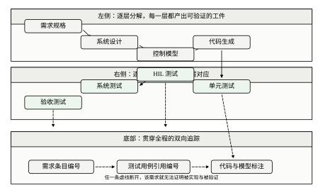
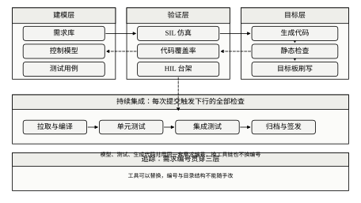
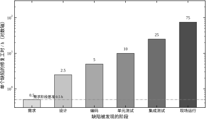
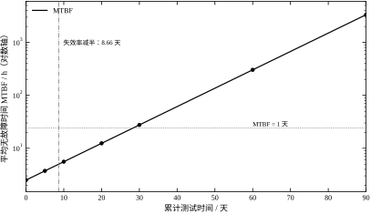
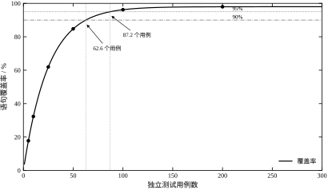
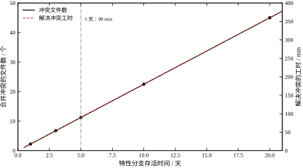
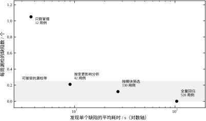
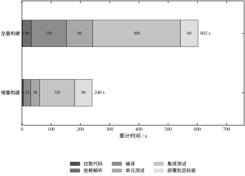
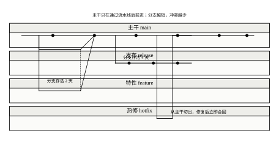
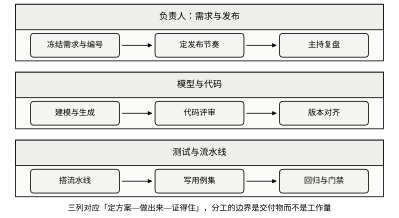

第一个场景是版本丢失。一条投运三年的生产线要改一处报警阈值，工程师打开共享盘，发现源码只有一个名为“最终版2”的压缩包，现场跑的到底是哪一版没人说得清。确认版本花了两周，改代码只花了十分钟。
第二个场景是无法回滚。有人把滤波系数从 0.2 改成 0.35，实验室阶跃响应更快了，现场却出现整线抖动。想退回上一版，才发现上一版只存在于某位工程师的笔记本里，而那台机器上周刚重装系统。
第三个场景是追溯断链。验收会上业主问：“这条安全联锁的需求，是哪一版代码实现的，哪个用例验证的？”在场的人都能说出“肯定实现了”，但没有人能在十分钟内拿出证据。
三个场景的共同点不是算法错，而是证据没留下。控制软件工程要解决的，正是“让每一句已经验证过都能指向一个可复现的动作”。
控制软件不是普通的应用软件，有四个差别决定了它不能照搬互联网那套做法。
第一是寿命长。一台设备的机械部分设计寿命十五年，控制软件往往要跟着走完整个周期，中间换三代硬件、五批维护人员。为三个月的项目设计的流程，撑不到第十年。
第二是资源紧。目标板可能只有几十 KB 内存、几十 MHz 主频，没有操作系统、没有动态分配、没有异常栈展开。单元测试要在宿主机上跑，跑通了不等于目标板上跑得通。
第三是与物理世界耦合。一个空指针在网页上是 500 错误，在伺服轴上是撞机。软件缺陷的后果不是“不好用”，而是“会伤人”。
第四是要认证。流程工业、汽车、轨道交通、医疗设备都有对应的功能安全标准，标准要求的不是“代码写得好”，而是“有证据证明代码写得好”。
本章在第六部分的位置是“生产流程”，不是“运行时机制”。
第 86 章讲一个 CPU 上多个周期任务怎么排，输出是任务周期与抖动。第 87 章讲一拍之内怎么把电流环算完，输出是指令级的时间预算。第 88 章讲 PLC 一次扫描的五个阶段。第 89 章讲这些计算单元之间的数据怎么走。
这四章回答“程序跑起来是什么样”，本章回答“程序是怎么被写出来、被验证、被留下记录的”。往后，第 91 章的数字孪生要用本章的模型与版本，第 92 章的工程问题会以“改一处、坏一片”的形态再次出现。
分工的判据很简单：凡是与时间刻度、寄存器、报文有关的，属于前四章；凡是与提交、构建、测试、追溯有关的，属于本章。
本章围绕五个词展开，先把它们的一句话定义摆出来。
版本管理是把“每一次改动”变成一个有编号、可回溯、可比较的对象。它的产物不是代码，是历史。
单元测试是把“这段代码在给定输入下应该输出什么”写成可自动执行的断言。它的产物不是覆盖率，是回归能力。
持续集成是把“编译、测试、打包”串成一条每次提交都自动跑的流水线。它的产物不是速度快，是反馈早。
代码生成是把控制模型自动翻译成目标代码，把手工誊写换成机械翻译。它的产物不是省人力，是消除誊写错误。
需求追踪是把需求、模型、代码、用例用同一套编号串起来。它的产物不是文档，是“能被证明”。
五个词不是并列的五件事，而是一条链：编号贯穿全程，版本记录变化，测试提供证据，流水线保证证据新鲜，生成减少人工介入。图 90-7 画的是这条链在 V 模型上的位置，图 90-8 画的是支撑它的工具链。


本章所有方法都可以归到一句话：把“已经验证过”变成可复现的动作。
“我测过了”不是证据，“用例 TC-042 在提交 a3f19c 上通过，日志在构建 #1187 里”才是证据。前一句依赖人的记忆，后一句依赖系统。
这条主线解释了很多看似繁琐的规定。为什么提交信息要写清改了什么？因为三个月后要靠它定位。为什么构建要留归档？因为现场那台设备跑的必须是某个确定的构建。为什么用例要编号？因为验收时要能指着编号说话。
反过来，任何一条规定如果无法产出“可复现的动作”，它就是形式主义，应当删掉。这条判据在 §90.11 讨论流程轻重时会再用一次。
软件工程里的“快”与“慢”，要按三把尺子量。
第一把是提交。一次提交从写到推，正常在几分钟到几小时。用这把尺子量，等十分钟的构建已经算慢。
第二把是构建与反馈。一次完整的编译加测试，从几十秒到几十分钟。用这把尺子量，十分钟的反馈属于“能接受”，一小时的反馈属于“当天不想再提交第二次”。
第三把是发布。控制软件的发布以周或月计，因为要停机窗口、要现场验证、要业主签字。用这把尺子量，前面两把尺子上的十分钟、一小时都被抹平了。
三把尺子给出不同的优先级。缩短提交到反馈的时间，收益落在开发者身上；缩短发布周期，收益落在业主身上。两者都要，但前者是后者的前提——反馈慢的团队，不敢频繁发布。
本章不讲编程语言的语法，不讲某个 IDE 的用法，不判断哪家工具便宜，也不做功能安全认证的法务解释。
本章讲的是方法与账目：哪些做法值得做、做多少、能换回什么。工具只是方法的载体，换一套工具，这些账还算得出来。
把控制项目里最常见的软件问题列成清单，本章后面的每一条方法都对应着清单上的一项。
第一项，现场装的版本与测试的版本不一致。表现是“测试好好的，现场不对”。根因是没有从标签重新构建，发出去的是某人本地编的产物。
第二项，改了一个参数，忘了改另一处。同名的限幅值在两处定义，改一处不生效。根因是没有单一参数源，标定表与代码各存一份。
第三项，回滚包不可用。出事时想退回上一版，发现旧包缺依赖或授权过期。根因是回滚包从未被验证。
第四项，需求改了，测试没跟上。验收时被问“这条需求怎么证明”，答不上来。根因是追踪链断在设计到用例这一层。
第五项，偶发问题查不下去。日志里只有“任务超时”，没有当时的输入与内部状态。根因是日志设计只记事件不记上下文。
第六项，一个人离职，模块没人敢动。根因是没有测试，改动无法验证，只能不动。
第七项，同样的问题修过三次。每次修完不补用例，下次重构又把坑挖回来。
第八项，构建在别人机器上失败。根因是编译器版本、依赖版本没有固化。
八项里没有一项是“算法算错了”。这就是控制项目的现实：软件事故多数来自过程，而不是来自控制理论。本章要处理的正是这八项。
软件工程里最稳的一条经验是：缺陷发现得越晚，修起来越贵。把它写成式子，设需求阶段修一个缺陷的工时为 c_0，第 i 阶段的相对倍数为 r_i，则该阶段单个缺陷的成本
C_i=c_0\,r_i \tag{90-1}
本章取 c_0=0.5 h，六个阶段的 r_i 依次为 1、5、10、20、50、150。这组倍数不是精确测量值，而是行业里反复出现的量级：每往后一个阶段，成本大约翻一倍到两倍。
按式 (90-1)，单缺陷成本从需求的 0.5 h 涨到现场的 75 h，差 150 倍。20 个缺陷如果在单元测试阶段全部修掉，总工时 200 h；如果全部漏到现场，总工时 1500 h。两者相差 1300 h，相当于一个工程师大半年的工作量。
图 90-1 把这组倍数画成柱状，纵轴取对数——因为线性轴上第一根柱子会被压成一条线。

这张图最常见的误读是“所以要拼命做需求评审”。倍数最大的确实是早期阶段，但早期阶段能发现的缺陷数量少；真正划算的是“在编码之后、集成之前”这一段，因为那里缺陷最密集，而成本还没起飞。
测试过程可以看成一个“缺陷被逐个发现”的过程。设软件里一共有 a 个缺陷，单位时间发现缺陷的比例为 b，则累计发现数
m(t)=a\left(1-e^{-bt}\right) \tag{90-2}
对时间求导得到失效率
\lambda(t)=ab\,e^{-bt} \tag{90-3}
平均无故障时间
{\rm MTBF}(t)=\frac{1}{\lambda(t)} \tag{90-4}
式 (90-2) 到 (90-4) 就是指数型可靠性增长模型。它只有两个参数：a 是“总共有多少缺陷”，b 是“发现得多快”。
本章取 a=120、b=0.08/天。代入式 (90-3)，第 0 天的失效率是 9.6 个/天，MTBF 只有 2.5 h；第 30 天失效率降到 0.871 个/天，MTBF 27.6 h；第 60 天失效率 0.079 个/天，MTBF 303.8 h。
图 90-2 是这条曲线的对数纵轴版本。取对数之后曲线接近直线，这是指数模型的标志——在对数轴上表现为匀速下降，说明“每过固定天数，失效率减半”。

由式 (90-3) 可以直接算出失效率减半所需的时间
t_{1/2}=\frac{\ln 2}{b} \tag{90-5}
代入 b=0.08，得 8.66 天。这个数比 a 更有用：它告诉你“测试强度够不够”。如果两个月过去失效率还没减半，说明 b 太小，测试没有打到缺陷密集的地方。
覆盖率不随用例数线性增长，它饱和。设覆盖率上限为 c_{\max}，特征用例数为 n_0，则 n 个独立用例能达到的覆盖率
c(n)=c_{\max}\left(1-e^{-n/n_0}\right) \tag{90-6}
反解出“要达到目标覆盖率 c 需要多少用例”
n=-n_0\ln\left(1-\frac{c}{c_{\max}}\right) \tag{90-7}
本章取 c_{\max}=0.98、n_0=25。5 个用例覆盖 17.8%，25 个覆盖 61.9%，50 个覆盖 84.7%，100 个覆盖 96.2%。
按式 (90-7)，达到 90% 需要 62.6 个用例，达到 95% 需要 87.2 个。这两个数是本章最常用的两个——它们把“覆盖率要到多少”从口号变成了工作量。
图 90-3 画的是这条饱和曲线。曲线在 50 到 100 个用例之间最陡，之后迅速变平：从 90% 到 95% 要多花 25 个用例，从 95% 到 98% 要多花上百个。

饱和的原因是“容易覆盖的先被覆盖”。前 25 个用例打的是主路径，一行一个用例；后 25 个打的是异常分支，一个用例要走五六个条件组合才碰到一行。这就是为什么覆盖率越往上越贵。
需求追踪通常分三层：需求到测试、测试到代码、代码回到需求。三层的完整率不是取平均，而是相乘
P=\prod_{i=1}^{3}p_i \tag{90-8}
三层都是 90% 时，端到端只有 72.9%。240 条需求里有 65 条断链。三层都是 95% 时端到端 85.7%，断链 34 条；三层都是 98% 时才到 94.1%，断链 14 条。
更要紧的是短板效应。若有一层只有 70%、另两层 95%，端到端是 63.2%，比“三层都 90%”还差。这说明补齐最弱的一层，收益远大于把已经不错的两层再提高几个点。
这条乘积规律是本章最容易被忽略的算术。评审时常见的说法是“我们三层都做到了 90% 以上”，听上去不错，实际每五条需求就有一条无法完整追溯。
合并冲突的数量，可以用一个粗估式。设并行开发人数 N_d，每人每天改动的文件数 d，分支存活天数 t，同一文件被两人同时改的概率 \rho，则冲突文件数
N_c=(N_d-1)\,d\,t\,\rho \tag{90-9}
本章取 N_d=6、d=3、\rho=0.15。分支存活 1 天时冲突 2.25 个文件，解决工时 18 min；存活 5 天时 11.25 个文件、90 min；存活 20 天时 45 个文件、360 min。
式 (90-9) 对 t 是线性的，这一点常被低估。很多人以为“分支开久一点没关系，最后合一次就行”，但冲突量是随天数匀速累积的，而且解决冲突本身又会引入新缺陷——本章按每个冲突 3% 计，20 天的分支平均引入 1.35 个缺陷。
图 90-4 把冲突文件数与解决工时画在一起。两条线形状相同，只是纵轴刻度差 8 倍，因为工时就是冲突数乘 8 min。

持续集成的价值不在“自动”，在“早”。反馈时间越长，开发者越倾向于攒着提交，一次构建覆盖的提交数越多，出错时的定位范围越大。
设反馈时间 T_{\rm fb}、平均提交间隔 T_c，则一次构建覆盖的提交数
B=\left\lceil\frac{T_{\rm fb}}{T_c}\right\rceil \tag{90-10}
若每次提交平均改动 \ell 行，定位范围就是 B\ell 行。
本章取 T_c=6 min、\ell=40 行。全量流水线 602 s，即 10.0 min，B=2，定位范围 80 行；增量流水线 240 s，即 4.0 min，B=1，定位范围 40 行。
这个模型的结论很直接：反馈时间翻倍，定位范围就翻倍。而定位范围翻倍，排错时间往往不止翻倍——因为要在两倍的改动里找出哪一处引起的。
回归测试要选策略：全量、按模块、按影响分析、只跑冒烟。四种策略的速度差几十倍，漏检率也差几十倍。
设一次运行的耗时为 T_{\rm run}，每周可捕获的缺陷数为 D，漏检率 p，则发现单个缺陷的平均成本
q=\frac{T_{\rm run}}{D(1-p)} \tag{90-11}
本章取 D=3、每个用例 0.6 s。全量 520 个用例，312 s，漏检 0，单缺陷成本 104 s；按模块 130 个用例，78 s，漏检 4%，成本 27.1 s；按影响分析 42 个用例，25.2 s，漏检 7%，成本 9.0 s；只跑冒烟 12 个用例，7.2 s，漏检 35%，成本 3.7 s。
单看式 (90-11)，冒烟最快。但它每周漏 1.05 个缺陷，这些缺陷会流到集成或现场，按式 (90-1) 的成本倍数算，省下的时间远不够赔。
正确的用法是把式 (90-11) 与式 (90-1) 连起来：冒烟省下 300 s，漏掉的缺陷如果到现场才被发现，单次成本 75 h。这笔账决定“什么时候必须跑全量”。
图 90-6 把四种策略画成“单缺陷成本—每周漏检”的散点，左下角是既快又准的理想区，实际点都沿一条斜线分布。

代码生成不消灭缺陷，它把缺陷从代码搬到模型，并且放大。
设生成代码 k_c 千行、代码缺陷密度 \rho_c，模型 k_m 千行（按等价规模计）、模型缺陷密度 \rho_m，一处模型缺陷平均影响 \alpha 处生成代码，则总缺陷数
D_{\rm tot}=k_c\rho_c+k_m\rho_m\alpha \tag{90-12}
本章取 k_c=1、k_m=0.25、\alpha=4。手写代码 \rho_c=8，总缺陷 8.0 个；生成的代码 \rho_c=0.5，但模型未验证时 \rho_m=3.0，总缺陷 0.5+0.25\times3.0\times4=3.5 个。
按数量看，生成仍然更少。但按修复成本看，结论反过来了：代码缺陷在单元测试阶段发现，按 20 倍计价；模型缺陷只能在集成或系统测试发现，按 50 倍计价。
手写：8\times20=160；生成未验证：0.5\times20+3.0\times50=160。两者打平。做了模型背靠背验证后，\rho_m 降到 0.6，总成本 40；再加静态检查，降到 36。
这就是很多团队“用了代码生成，缺陷没见少”的原因：省下的代码缺陷，被模型缺陷按更高的单价补回来了。
把发布看成一次带风险的变更。设变更失败率 f、每次失败的恢复时间 t_r、年发布次数 R，则年不可用时间
U_{\rm year}=f\,R\,t_r \tag{90-13}
本章取 R=24 次/年。手工发布 f=0.30、t_r=240 min，年不可用 28.80 h；脚本化发布 6.48 h；流水线加自动回滚 0.72 h；再加灰度 0.26 h。
从 28.80 h 到 0.26 h，差 110 倍。这个差距不是靠“写得更仔细”得来的，是靠“失败后能快速退回”得来的——t_r 从 240 min 压到 8 min，贡献了大部分改善。
这条式子还说明一件事：降低失败率与缩短恢复时间，是两条独立的杠杆。多数团队只盯前者，而后者往往更容易改进。
这十几条式子都是粗糙模型，用之前要知道它们会在哪里偏。四处最典型。
第一处，缺陷成本倍数。1 比 150 这个比例来自航空与汽车行业的经验统计，不同产品差异很大。安全相关项目现场缺陷的代价被低估，因为漏掉了停机与召回；互联网类项目现场缺陷的代价被高估，因为一次热修只要十几分钟。倍数只用来排序，不用来报价。
第二处，可靠性增长。指数模型假设剩余缺陷按固定比例被检出，而实际测试中，先被找到的是容易触发的缺陷，越往后越难。因此真实曲线前半段比指数更陡、后半段更平，指数模型在后期会高估改进速度。
第三处，覆盖率饱和。c_{\max}=0.98 是假设“有些分支永远测不到”，而 n_0=25 假设用例的等效用。实际上用例质量差异极大，一条精心设计的边界用例顶十条随手写的。n_0 是拟合值，不是设计值。
第四处，分支冲突。线性模型假设冲突数随分支寿命等比增长，而实际中冲突集中在合并瞬间，且与模块边界清晰度强相关。这个模型只适合比较“分支活三天与活十天”的差别，不适合预测具体某次合并会冲突几个文件。
四处的共同点是：模型给趋势，现场给绝对值。§90.4.5 提到脚本与现场数据差三倍属正常，差一个数量级就说明假设错了。用之前先拿自己项目的历史数据校一次，比换更复杂的模型有用。
十几条式子看起来各说各的，实际是一条链上的若干段。
起点是缺陷产生：写代码就会引入缺陷，生成代码把缺陷从代码搬到模型（式 90-12）。这一段决定“有多少缺陷”。
接着是缺陷被发现：测试投入时间，缺陷按指数规律被检出（式 90-2、90-3）。这一段决定“多快能找完”。找的时候能覆盖多少分支，由用例数决定（式 90-6、90-7）。
然后是缺陷被追踪：需求、设计、用例三层串起来，端到端完整率是三层之积（式 90-8）。这一段决定“能不能证明找全了”。
再往后是改动带来的新缺陷：分支活得越久，合并冲突越多，冲突又带进新缺陷（式 90-9）。这一段决定“改动本身会不会制造缺陷”。
最后是漏出去的缺陷：回归跑得少就漏得多（式 90-11），发布失败就停机（式 90-13）。这一段决定“漏出去以后损失多大”。
链条上游的一个数变了，下游全变。比如把生成比例提高，上游缺陷总数下降，但模型缺陷的单价更高，总成本可能不变（§90.2.8 的结论）。
理解这条链的用处是：遇到问题先定位在哪一段。缺陷太多是上游（设计与编码），找得太慢是中游（测试与覆盖率），证明不了是追踪，改动频繁出事是分支，损失太大是发布与回滚。定位错了，投入就白花。
搭一套控制软件工程，按五步走：给需求编号、定仓库与目录、定测试分层、定流水线分级、建追踪矩阵。
每一步都要求有输出物，因为软件的流程只有产出物才算完成。编号规则的输出是一张编号表；目录约定的输出是一个空仓库加一份说明；测试分层的输出是分层清单与用例配额；流水线分级的输出是四条流水线的定义文件；追踪矩阵的输出是三张可自动生成的表。
五步有先后依赖：没有编号，追踪无从谈起；没有目录，流水线找不到该编什么；没有测试分层，流水线不知道每级跑什么。顺序颠倒会返工。
五步做完通常需要两到三周，投入不大。真正花时间的是把它们坚持三年。
编号规则只有三条要求：稳定、唯一、可读。
稳定指编号不随排序、优先级、文档版本变化。唯一指一号一需求，不复用。可读指看编号能猜到子系统，例如 REQ-AX-014 一眼知道是轴控相关的第十四条。
推荐格式是“前缀 + 子系统 + 三位序号”。前缀统一为 REQ，子系统用两到四个字母，序号从 001 起。不要用层级编号（如 3.2.1.4），因为需求文档一改结构，所有编号都会变，历史记录全部失效。
删除的需求不回收号码，标记为废止即可。理由是旧日志、旧报告、旧提交信息里都引用过它，回收号码会让这些记录指向错误的对象。
编号由一个人统一分配，不要各自申请。多人同时编号，撞号几乎必然发生。
单仓还是多仓，是第一个要定的结构问题。表 90-1 给出对比。
表 90-1 单仓与多仓的取舍
| 维度 | 单仓（模型、代码、测试、标定同仓） | 多仓（按模块分仓） |
|---|---|---|
| 版本一致性 | 天然一致，一次提交对齐全部 | 需人工对齐，易错配 |
| 构建复杂度 | 一次拉取即可全量构建 | 需管理依赖版本 |
| 权限粒度 | 粗，按目录分权 | 细，按仓分权 |
| 适合规模 | 50 万行以内、单产品 | 多产品共享基础库 |
控制项目多数选单仓。原因是模型、生成代码、测试用例、标定表之间存在强耦合，一次改动往往同时涉及四处，分仓会让“哪一版模型配哪一版代码”变成需要人工核对的表格。
目录按职责分，不按文件类型分。推荐七个顶层目录：req/ 放需求与编号表，model/ 放控制模型，src/ 放手写代码，test/ 放用例与激励数据，cal/ 放标定表，tools/ 放脚本，docs/ 放设计与评审记录。
生成代码单独放 src/gen/，并在文件头写入生成器版本与模型哈希。再配一条检查规则：src/gen/ 下的文件若被手工修改，流水线直接失败。这条规则挡住了绝大多数“现场改了生成代码，下次重新生成就丢失”的事故。
测试要分层，因为不同层的运行成本差三个数量级。表 90-2 是四层的典型配置。
表 90-2 四层测试的数量、耗时与触发时机
| 层 | 用例数量级 | 单次耗时 | 触发时机 | 主要目标 |
|---|---|---|---|---|
| 单元测试 | 300–800 | 毫秒 | 每次提交 | 函数级正确性、边界条件 |
| 集成测试 | 50–150 | 十秒 | 每次合并 | 模块间接口与时序 |
| 硬件在环 | 10–30 | 分钟 | 每夜 | 与真实 IO、执行器耦合 |
| 验收测试 | 20–50 | 小时 | 每次发布 | 需求覆盖与现场工况 |
配额可以按覆盖率反算。一个 8 kLOC 的控制器，若要求语句覆盖 90%，按式 (90-7) 需要 62.6 个“等效独立用例”；考虑到一个用例平均覆盖十几行、且存在大量重复路径，实际用例数通常是这个数的五到十倍，即 300 到 600 个。
这个反算的价值在于给出量级。没有它，团队对“要做多少测试”的估计会差一个数量级：有人以为 50 个用例够了，有人以为要 5000 个。
四层的比例也要看。单元测试应占全部用例的 70% 以上，因为它是唯一能在秒级给出反馈的一层。集成与硬件在环加起来不应超过 25%，验收不超过 5%。
流水线不是一条，是四条，按触发时机与时限分开。表 90-3 是分级配置。
表 90-3 四条流水线的触发条件与时限
| 级别 | 触发 | 内容 | 时限 |
|---|---|---|---|
| 提交级 | 每次推送 | 编译 + 单元测试 + 静态检查 | 4 min |
| 合并级 | 合并请求 | 提交级 + 集成测试 + 覆盖率门禁 | 15 min |
| 夜间级 | 每日定时 | 合并级 + 硬件在环 + 长时稳定性 | 2 h |
| 发布级 | 打标签 | 夜间级 + 验收测试 + 归档与签发 | 1 天 |
分级的依据是式 (90-10)：时限决定批大小，批大小决定定位范围。提交级必须在 4 min 内跑完，才能保证“一次构建一次提交”。
图 90-5 是本章流水线的时间构成。全量 602 s 里集成测试 300 s 占一半，编译 120 s 占两成；增量 240 s 里集成测试 120 s 仍是大头，部署 60 s 无法压缩。

这张图给出优化的优先级：想让提交级进 4 min，不能靠“少跑点单元测试”，要靠“把集成测试移出提交级”。移动比压缩更有效。
追踪矩阵是三张两列的表：需求到用例、用例到代码、代码到需求。第三张是反向索引，用于回答“这行代码为什么存在”。
三张表都要能自动生成，不能靠人填。生成方式是在代码与用例里写标签，例如用例头部写 @req REQ-AX-014，代码函数注释里写 @req REQ-AX-014，脚本扫一遍就出表。
完整性按式 (90-8) 算，报端到端而不是三层各自。评审时只报“三层都 95%”没有意义，因为端到端只有 85.7%。
矩阵要进版本库，与代码同一次提交。否则会出现“代码改了、矩阵没改”的错位，而这种错位比没有矩阵更危险——它给人虚假的安心。
五步的输出合成一页，作为项目的软件工程基线。表 90-4 是这一页的骨架。
表 90-4 软件工程基线的一页纸骨架
| 项 | 本项目的取值 |
|---|---|
| 需求编号 | REQ-<子系统>-<三位>，单人分配，废止不回收 |
| 仓库结构 | 单仓七目录，生成代码隔离在 src/gen/ |
| 测试分层 | 单元 500、集成 90、在环 18、验收 30 |
| 流水线 | 提交 4 min、合并 15 min、夜间 2 h、发布 1 天 |
| 生成边界 | 控制算法生成，通信与驱动手写 |
| 追踪口径 | 端到端完整率 ≥ 90%，按式 (90-8) 计算 |
这张表要写进项目计划，并在每次评审时对照。它的作用是让“要不要加一道评审”这类讨论有一个共同的参照，而不是每次都从头争。
基线不是永久的。项目进入维护期后，测试配额可以降、流水线可以简化，但编号规则与目录结构不要改——它们是历史记录的锚点。
第一个错误是按代码行数估测试工作量。代码行数与用例数不是线性关系：同样的行数，分支多的代码需要成倍的用例。应按分支数与接口数估。
第二个错误是把覆盖率当质量指标。覆盖率只说明“这行被执行过”，不说明“结果对不对”。一个断言写错的用例，照样贡献覆盖率。覆盖率要与变异测试或人工评审配合才有意义。
第三个错误是按人头估流程成本，忽略等待。流程的主要成本不是人干活的时间，是人等结果的时间。一条 15 min 的流水线，若每天触发十次，就是 150 min 的等待；这段时间里人并没有闲着，而是在做别的事，切换成本另算。
五个步骤搭完之后，要过一次评审。评审不看文档写得漂不漂亮，看五样具体的东西。
第一样，随便抽三条需求，能不能在五分钟内走完“需求、设计、代码、用例、结果”这条链。走不完就是链断了。
第二样，从仓库根目录开始，不看任何口头说明，能不能构建出产物。构建不出来就是环境没固化。
第三样，找出一个 src/gen/ 下的文件，问“如果手工改它会发生什么”。答不出“流水线报错”，说明生成边界没有守住。
第四样，让负责人演示一次回滚。不是讲流程，是实际退回上一版并跑起来。
第五样，问最近三个缺陷分别是怎么发现的。如果三个都是现场发现的，说明测试层形同虚设；如果三个都有对应新增用例，说明闭环在做。
五样都能过，这套工程就算搭起来了。过不了的那一样，就是下一步该补的地方。
评审最忌讳变成“文档检查”。文档齐全但五样都过不了的项目很常见，反过来文档简陋但五样都过的项目也有。以能不能跑通为准，不以文档厚度为准。
评审要留记录，记录只写两件事：哪一样没过、谁负责什么时候补齐。写多了没人看。
控制项目的工具一旦选定，往往要用五年以上。选型时按四条原则看，比看功能列表有用。
第一条，能被脚本调用。工具必须有命令行接口或 API，否则无法接进流水线。只有图形界面的工具，最终会变成一个人的手工步骤。
第二条，数据能导出。需求、用例、结果都要能导出成文本或表格。导不出就意味着数据被锁死，将来换工具要重录一遍，于是永远换不掉。
第三条，能离线运行。控制项目的代码常在内网，需要联网激活或云端校验的工具会直接不可用。买之前先在一台断网机器上装一次。
第四条，可替换。优先选文件格式开放、存储在本地的工具。两年后团队可能换工具，也可能要交付源码给业主，格式封闭会变成事故。
三条常见错误：按厂商演示选型，演示环境永远是理想环境；按功能数量选型，功能多意味着配置复杂，最后只用两成；按价格选型，省下的授权费往往抵不上迁移成本。
还有一条容易被忽略：工具要能被新人一天内学会基本操作。学三周才能提交一次代码的工具，会被绕过。
测试通常以“人·天”或“机·时”连续投入，而不是一次性的动作。把时间当连续变量，可以用微分方程描述缺陷被发现的速度，从而回答“还要测多久”。
这个视角的局限也要说清：它把软件看成“装着固定数量缺陷的容器”，忽略了缺陷之间的关联、修复引入的新缺陷、以及测试策略的变化。它给的是趋势与量级，不是精确预测。
式 (90-2) 建立在三条假设上。
第一条是缺陷总数有限，记为 a。这条假设在实际中大致成立：一个模块的缺陷不会无穷多，随着测试推进总会收敛。
第二条是发现比例恒定，记为 b。它意味着“剩下的缺陷被发现的概率与数量成正比”，也就是每个缺陷的“可发现性”相同。实际中热点模块的缺陷更容易被发现，所以真实曲线比指数模型更陡。
第三条是修复不引入新缺陷。这条最容易被破坏。修一个缺陷平均引入 0.1 到 0.3 个新缺陷是常见水平，缺陷密集的模块更差。
三条都成立时，式 (90-2) 可以放心用来做趋势判断；第三条明显不成立时，曲线会翘尾，这时要停下来做重构而不是继续加测试。
8.66 天这个数，最实用的地方是当“体检指标”。
做法是每周统计一次现场或测试环境的失效率，看它有没有按 8 到 9 天减半。若连续三周没减半，说明 b 偏小，要从三个方向查。
方向一是用例集中在主路径。主路径的缺陷早被发现了，剩下的都在异常分支，而异常分支没有被覆盖。
方向二是环境不稳定。测试环境自身的故障被记成了软件缺陷，导致失效率虚高且不收敛。
方向三是缺陷被误判为不可复现。这类缺陷在统计上被“挂起”，不计入失效率，但它们实际还在。
停止测试的判据不是“测够了”，而是“再测一天的收益小于成本”。
写成算式：当天收益等于“当天能发现的缺陷数”乘“这些缺陷若漏到现场的额外成本”，成本等于一天的测试投入。
按本章参数，第 30 天失效率 0.871 个/天，第 60 天 0.079 个/天。从第 30 天到第 60 天，30 天里多发现约 10 个缺陷，平均 3 天一个。若单缺陷现场成本 75 h、测试投入 8 h/天，则 3 天投入 24 h，换回 75 h，仍然划算。
第 60 天到第 90 天，30 天里只多发现 0.9 个缺陷，平均 33 天一个。33 天投入 264 h，换回 75 h，已经不划算。
交叉点就在第 60 天附近。这个算法比“感觉差不多了”可靠，也比“再测一个月保险”省钱。
第一种是缺陷被“藏”起来。某些缺陷只在特定时序、特定负载下出现，常规测试打不到，失效率长时间不降。表现为曲线尾部变平但不到零。
第二种是修复引入新缺陷。每次修复都带进 0.1 到 0.3 个新缺陷，当剩余缺陷少到与新增缺陷同一量级时，失效率不再下降，甚至回升。表现为曲线翘尾。
两种情形的处置完全不同。前者要改测试方法（加时序扰动、加负载），后者要停止加测试、转做重构与代码评审。看曲线形状就能区分：平尾是前者，翘尾是后者。
测试期的曲线要拿到现场验证。做法是把投运前三个月的故障间隔画在与图 90-2 相同的对数坐标上，比较斜率。
若现场斜率明显小于测试期，说明测试环境不具代表性：测试里容易暴露的缺陷在现场不容易暴露，反之亦然。常见原因是测试用的是理想信号源，现场有噪声、有电网波动、有操作工的误动作。
若现场斜率明显大于测试期，说明测试过度拟合了特定工况，或者现场的冗余设计掩盖了部分缺陷。这种情况更危险，因为它让人误以为软件很稳。
对照的目的不是让两条线重合，而是让“测试期给出的 MTBF 预测”有一个可信的误差范围。差三倍以内算正常，差十倍就要查原因。
a 与 b 不是永久常数。四种情况下必须重新拟合，否则后面的预测会系统性偏乐观。
第一种，架构大改。把单任务改成多任务、把轮询改成中断、把定点改成浮点，都会改变缺陷的暴露方式。此时旧曲线的斜率不再适用。
第二种，测试环境更换。从软件在环换到硬件在环，从理想信号源换到实际传感器，测出来的失效率会跳变。跳变本身不是问题，用旧参数解释新数据才是问题。
第三种，团队规模变化。人数翻倍，代码量增速与评审质量都会变，检出率随之变。§90.8 的调参记录里，团队扩张的那一个月要单独标出来。
第四种，缺陷来源结构变化。如果现场缺陷从“逻辑错误”变成“配置错误”，说明问题已经从代码转到交付流程，继续拟合可靠性曲线没有意义。
重估的方法很简单：取最近一个月的故障间隔数据，在对数坐标上拟合直线，看斜率。斜率与旧值差 30% 以内就不动，差一倍以上就换。换的时候要把旧曲线保留在图上，作为对照。
不要每次出故障就重估。参数抖动会让所有人失去判断基准，比参数略偏更糟。
很多团队说“测试做不起来”，一查往往是五个具体原因之一。
第一个，用例依赖真实硬件。跑一次要连台架、要上电、要等人。对策是把硬件访问抽成接口，用假实现跑单元测试。
第二个，用例启动太慢。框架初始化要十秒，写用例的人就懒得跑。对策是拆掉重初始化，让单条用例在百毫秒级完成。
第三个，断言难写。输出是一大块结构体或波形，不知道断言什么。对策是先写一个“黄金样本”，用比对代替逐字段断言。
第四个，反馈看不见。跑了但没人知道结果，失败了也没人修。对策是把结果放进流水线与看板，红了要有人管。
第五个，写用例的人得不到好处。写用例花时间，收益在半年后。对策是把“修缺陷必须补用例”变成硬规则，让写用例成为修复的一部分，而不是额外工作。
五个原因里，前三个是技术问题，后两个是管理问题。技术问题一周能改，管理问题要一个季度。多数团队卡在后两个，却一直在前三个上找办法。
连续模型回答“还要测多久”，离散模型回答“这一批够不够”。软件的活动天然是离散的：一次提交、一个用例、一次构建、一个冲突，都是整数。
离散视角的价值在于它不会给出小数答案。连续模型说“需要 62.6 个用例”，实际只能写 63 个；说“平均 1.35 个缺陷”，实际要么 1 个要么 2 个。工程决策要落在整数上。
设每次提交引入缺陷的概率为 p，连续 n 次提交中至少有一次引入缺陷的概率
P_n=1-(1-p)^n \tag{90-14}
取 p=0.15，5 次提交时 P_5=0.556，10 次时 P_{10}=0.803，20 次时 P_{20}=0.961。
式 (90-14) 解释了一个常见错觉：“我每次提交都很小心，怎么还是出错。”单次 15% 的出错率听上去不高，但一天二十次提交，出错的概率就是 96%。
它也解释了为什么要缩短反馈时间。缺陷引入是离散事件，发现得越晚，累积的未验证提交越多，定位时要在更多候选里排查。
覆盖率是连续曲线，用例数是整数，两者的接缝处有几个实用结论。
第一个是向上取整。式 (90-7) 给出 62.6，实际要写 63 个用例；给出 87.2，要写 88 个。差一个用例看起来不多，但在评审时“63”比“62.6”更好执行。
第二个是边际收益递减。对式 (90-6) 求导，第 n 个用例带来的覆盖增量
\Delta c(n)=\frac{c_{\max}}{n_0}e^{-n/n_0} \tag{90-15}
在 n=50 处，每个用例还能带来 0.53 个百分点；在 n=100 处只剩 0.072 个百分点；到 n=200 处只有 0.0013 个百分点。写第 200 个用例的收益，是写第 50 个的千分之二。
第三个是门禁要卡整数。流水线里写“覆盖率不低于 90%”，实际执行时会因为浮点比较出现 89.99% 被判失败的情况。正确写法是卡“不低于 90.0%，允许 0.1 个百分点的测量波动”。
追踪链的端到端完整率是连续量，断链的需求条数是整数。
三层均 90% 时端到端 72.9%，240 条需求里断链 65.0 条。这个 65 是期望值，实际可能是 63 或 67，取决于哪几条断。
评审时用整数说话更有力：“240 条需求里有 65 条无法完整追溯”，比“追溯率 72.9%”更能让人行动。前者是“有 65 条要补”，后者是“还有提升空间”。
同理，三层均 98% 时断链 14 条。这个数量级是可以逐条补齐的；65 条则必须改流程，而不是加班。
式 (90-9) 给出的冲突文件数常带小数，例如 2.25、11.25。实际合并时冲突是按文件计的，2.25 意味着“多数情况下 2 个，偶尔 3 个”。
解决工时却是连续的：一个冲突可能 3 min 解决，也可能 40 min。本章取 8 min 是平均值，实际分布很宽。
工程上要用“期望值做预算、最坏值做排期”。预算按 8 min 一个算，排期按“最麻烦的那个冲突要半天”留余量。只用平均值排期，几乎必然延期。
表 90-2 给的是数量级，落地时要变成整数配额，并与人力匹配。
一个 8 kLOC 的控制器，按 90% 覆盖率反算需要 63 个等效用例，实际写 500 个单元用例、90 个集成用例、18 个在环用例、30 个验收用例。四层加起来 638 个。
这 638 个用例要有人维护。经验比例是一个用例每年维护成本约半小时，638 个就是每年 319 h，约两个月的一个人力。这笔钱要写进预算，否则用例会在两年内腐烂成“跑不过就注释掉”。
第一条用法是算风险敞口。用式 (90-14) 算“这一批未验证提交里出问题的概率”，决定要不要插一次全量回归。
第二条用法是把连续指标翻译成整数任务。“端到端追溯率 85.7%”翻译成“补 34 条需求的追踪”，任务就具体了。
第三条用法是给门禁定阈值。门禁阈值必须是整数或带容差的定点数，否则会因为测量波动频繁误报，最后被人为关闭。
排期时最常见的错误是拿小数直接乘。算出“还需 62.6 个用例”，就按 62 个排，结果正好差在 90% 那条线下面。
正确做法是向上取整，再留余量。取整之后加 10%，因为用例的等效用不齐，总有一部分是重复覆盖。
工时也要按整数算。一天写 8 个用例是理想值，实际受会议、调试、环境问题影响，能到 5 个就算不错。用 62 个除以 8 得 7.75 天，用 62 除以 5 得 12.4 天，后者才是真实排期。
缺陷数同理。“每周漏 0.21 个缺陷”听起来无害，但缺陷是整数，实际是“每五周漏一个”。对一年期的项目，这个差别决定了要不要做影响分析。
还有一层整数效应在批次上。批大小为 1 时，一次失败只牵连一个提交；批大小为 2 时，定位范围立刻翻倍。批大小不能取 1.5，所以“把反馈时间从 7 min 压到 6 min”这种优化，可能在数字上只差一分钟，在工程上跨了一整档。
排期的三条规矩：向上取整、除以保守产能、按整数批次算。三条都做到，排出来的日期才不会被现实反复推翻。
人对累积概率的直觉普遍偏低。单次失败率 15% 听起来“不大”，但按式 90-14，跑二十次至少失败一次的概率是 96.1%。
这个差距在控制项目里有两个直接后果。
第一个后果是不稳定测试被容忍。“这条用例十次有八次过，偶尔红”，听起来可以接受。实际上八次过一次的用例，每五个提交就会红一次，团队很快学会忽略红色，整套测试失去意义。不稳定用例必须修，不能等。
第二个后果是备份被高估。“有两套台架，坏一套还有一套”，如果单套月故障率 15%，两套同时可用的概率是 72.3%，一个月里近三成时间只有一套。要真正做到“随时有一套可用”，得有三套，或者有一套的修复时间短于一小时。
反过来，小概率也不能忽略。年失败率 1% 的事故，二十年里发生的概率是 18.2%。对要运行二十年的设备，1% 不是“基本不会发生”，而是“迟早发生”。
算这类数不需要复杂工具，拿式 90-14 手算就够。养成算一遍的习惯，比事后解释“没想到会连着出”有用。
控制软件说“稳定”，可能指四件不同的事，混在一起讨论就会各说各话。
第一是不崩。连续运行数千小时不重启、不死机、不漏内存。这是可靠性。
第二是可重现。同样的源码、同样的工具链，编出来的二进制逐位一致。这是构建稳定性。
第三是可回滚。任何一个已发布版本，都能在十分钟内退回上一版。这是运维稳定性。
第四是性能不退化。新版本的任务抖动、最坏执行时间、内存占用都不比旧版差。这是性能稳定性。
四个含义对应四套检查方法，不能互相替代。一个从不崩溃的软件，可能每次编译出来的二进制都不一样。
构建可重现指同一份源码在任何一台机器上编出逐位相同的二进制。做到它需要三个条件。
第一个是工具链锁定。编译器版本、链接器版本、库版本全部写进配置文件，并校验哈希。用“最新版编译器”是重现性的天敌。
第二个是消除时间戳。很多编译器会把编译时间写进二进制，导致每次构建都不同。加 -frandom-seed 一类的选项，或把时间戳固定为源码提交时间。
第三个是路径无关。源码路径会进入调试信息，不同人放在不同目录就会编出不同的二进制。用相对路径或映射到固定挂载点。
三个条件都满足后，才能做“二进制比对”：现场那台设备上的程序，与仓库里某个标签编出来的程序，哈希一致。这是排查“现场跑的不是这一版”最硬的证据。
发布是带风险的变更。度量它需要两个数：多久失败一次，失败后多久恢复。表 90-5 是四种发布方式的对比。
表 90-5 四种发布方式的失败率、恢复时间与年不可用时间
| 发布方式 | 变更失败率 | 恢复时间 / min | 年不可用 / h |
|---|---|---|---|
| 手工发布 | 30% | 240 | 28.80 |
| 脚本化发布 | 18% | 90 | 6.48 |
| 流水线 + 自动回滚 | 12% | 15 | 0.72 |
| 流水线 + 灰度 + 自动回滚 | 8% | 8 | 0.26 |
表 90-5 最值得看的是第三列。从手工到灰度，失败率只降了 3.75 倍，恢复时间降了 30 倍，年不可用时间降了 110 倍。改善主要来自恢复速度，不是失败率。
这给出一条优先级：先把回滚做出来，再谈降低失败率。回滚是确定性的工程问题，失败率是概率问题，前者更容易见效。
控制软件的性能回归，不是测“跑得多快”，是测“最坏情况下多慢”。
要盯三个量：任务周期抖动、最坏执行时间、栈深度。三个量都要设阈值，超阈值即判定回归失败。
抖动阈值按 §89.7.4 的口径定：不超过周期的 10%。1 ms 周期对应 100 µs，100 µs 周期对应 10 µs。
最坏执行时间要留 30% 余量。测得 700 µs 的任务，在 1 ms 周期里只算勉强合格；编译器升级、库函数替换都可能让它涨 10%。
栈深度要用静态分析加实测双重确认。静态分析给上界，实测给实际峰值，两者差一倍以上说明有未分析的路径。
嵌入式控制软件不允许“跑着看”。内存、栈、CPU 占用都要在编译期给出上界。
堆一般禁用。动态分配在长时间运行中会产生碎片，而碎片导致的失败往往在几个月后才出现，且难以复现。要用就在启动时一次性分配完。
栈按最坏路径算，不按平均。递归、大局部数组、变长数组是三个主要风险点，静态检查工具能直接报出来。
CPU 占用按最坏执行时间除以周期算。单任务不超过 70%，多任务总和不超过 80%。超过之后，任何一次偶发的长路径都会导致丢拍。
可靠性、可重现性、性能，三者退化的顺序有规律。
性能最先坏。加一个功能、换一版编译器、多一层日志，抖动与执行时间就往上走。它是渐变的，容易被“还能跑”掩盖。
可重现性第二个坏。有人手工改了一行生成代码、有人用了本地编译器、有人忘了提交配置文件。它是突变的，通常在某次需要复现问题时才发现。
可靠性最后坏，但一旦坏了最难修。内存泄漏、计数器溢出、长时间运行的浮点累积误差，都要几天到几个月才暴露。
按这个顺序，日常检查的重点应当是性能趋势，而不是等崩溃。每周跑一次性能回归，比每次出事再查便宜得多。
第一类是日志写满存储。调试期开的详细日志忘了关，三个月后磁盘满，系统停机。对策是日志分级加滚动删除，并设总量上限。
第二类是计数器溢出。32 位毫秒计数器约 49.7 天回绕，若代码里用绝对时间做差，回绕瞬间会出现巨大的负值。对策是一律用无符号差值，并在回绕点做一次专项测试。
第三类是时间戳漂移。设备时钟不与外部同步，一年后与真实时间差几分钟，故障记录无法与其他系统对齐。对策见 §89.10.3。
三类隐患的共同点是“测试期看不出来”。它们不会在验收测试的几小时里暴露，只能靠设计时的规则避免。
性能回归最容易被做成“偶尔跑一次，看数差不多”的摆设。要让它真正起作用，得定三件事：测什么、怎么判、多久测一次。
测三样。一是任务周期抖动，取一万个周期的最大值与标准差；二是最坏执行时间，取所有分支都走到的那条路径；三是关键响应的端到端延迟，从输入中断到输出更新。
判据用相对值，不用绝对值。抖动不超过基线的 10% 算通过，最坏执行时间不超过预算的 70% 算通过。相对值能适应不同的硬件平台，绝对值一换板子就失效。
频率按周。每次合并到主干后自动跑一次，结果存成时间序列。单次结果没意义，连续四周上升 20% 就是趋势。
判据要写进流水线，不能靠人看。人看的结果是“上次好像也这样”，机器看的结果是“超出 12%，失败”。
最后一条经验：性能回归的基线要跟着版本走，不跟着时间走。新版本如果因为功能增加而合理地慢了一点，要把基线更新并记录原因，否则半年后所有提交都会红。
控制项目的需求变更比软件项目更频繁，因为现场工况、执行器型号、业主口味都会变。变更本身不可怕，可怕的是每次都按“临时改一下”处理。
按影响范围分三级，处理方式不同。
第一级是参数级：只改标定值，不改逻辑。这类变更走参数表，不进代码，不需要重新编译。前提是参数表与代码分离，且参数有范围校验。
第二级是逻辑级：改判断条件、改状态机跳转、改限幅曲线。这类变更要改代码、补用例、重跑回归，但不必重新做架构评审。
第三级是架构级：改采样周期、改任务划分、改通信协议。这类变更要重新做时序分析，重新评估最坏执行时间，重新跑长时稳定性测试。
分级的价值在于避免“小事走大流程”和“大事走小流程”。前者让人烦，后者让人翻车。
每次变更要回答三个问题：影响哪些需求、影响哪些用例、要不要重新标定。三个答案写进提交说明，比写十行改动描述有用。
还有一个纪律：变更期间不叠加。改逻辑的同时不要顺手升级编译器，否则出了问题分不清是谁的责任。这条纪律在赶工期时最容易被破坏，也最容易导致“改了一周不知道为什么好了”。
本章出现的量可以归成七类，分三层：过程层管“多久反馈一次”，质量层管“证据有多密”，结构层管“改动有多大”。
过程层的参数是反馈时间 T_{\rm fb}、构建批大小 B、发布失败率 f。质量层的参数是覆盖率 c、用例数 n、追踪完整率 P。结构层的参数是分支寿命 t。
表 90-6 把七个参数列在一起，给出单位、典型范围与“改它会发生什么”。
表 90-6 七个参数的单位、范围与单调影响
| 参数 | 符号 | 单位 | 典型范围 | 改大的后果 |
|---|---|---|---|---|
| 反馈时间 | T_{\rm fb} | min | 3–60 | 批变大，定位范围线性变大 |
| 批大小 | B | 次 | 1–5 | 单次失败牵连的改动变多 |
| 覆盖率 | c | % | 60–95 | 剩余缺陷减少，但边际成本陡增 |
| 用例数 | n | 个 | 100–1000 | 维护成本线性增长 |
| 追踪完整率 | P | % | 60–98 | 断链条数按乘积下降 |
| 分支寿命 | t | 天 | 1–20 | 冲突数线性增长，缺陷随之增加 |
| 发布失败率 | f | % | 5–30 | 年不可用时间线性增长 |
这张表只给方向，不给数量关系。同样是“改大”，分支寿命翻倍冲突就翻倍，覆盖率从 90% 到 95% 却要多花四成用例。下面几小节说清数量关系。
七个参数里，覆盖率是唯一收敛的。其余参数的后果大致线性，覆盖率的后果按指数饱和。
这个差别来自“容易的先做”。前一半用例覆盖主路径，后一半覆盖异常组合，同样的用例数换来的覆盖越来越少。
工程上把 90% 当常规目标，理由是式 (90-7) 给出 63 个等效用例，多数学得动；到 95% 要 88 个，增加四成；到 98% 要两百多个，增加三倍，而剩下的 2% 往往是不可达代码或硬件异常分支。
不可达代码要显式排除并注明理由，不要靠“写个假用例凑覆盖”。凑出来的覆盖率会让门禁失效，也会让后来的人误判。
用例数增长带来的收益按式 (90-15) 递减，成本却按线性增长——每多用例每年约半小时维护。
两个成本相等的那一点，就是用例数的经济上限。按本章参数，第 100 个用例带来 0.072 个百分点的覆盖，评估一次约 0.6 s，一年跑 250 次是 150 s；维护成本 30 min。收益远小于成本。
所以合理的做法是“分层配额 + 定期清理”。单元层保持 500 个左右，把跑不过、重复、已失效的用例每季度清一次。不清的用例会变成负担，最后整层被跳过。
分支寿命对冲突的影响是线性的，见式 (90-9)。这条线性关系容易被低估，因为它不显眼——每天多一点点，二十天后是二十倍。
线性还意味着它有一个明确的上限。设团队能承受每周 90 min 的冲突解决时间，按 8 min 一个冲突，就是每周 11 个冲突；按式 (90-9) 反解，分支寿命上限约 5 天。
5 天这个数与“一周一个迭代”的经验吻合。它不是巧合：迭代长度本质上就是分支寿命的上限。
式 (90-10) 是一条阶梯函数，不是连续函数。反馈时间从 6 min 涨到 12 min，批大小从 1 跳到 2；从 18 min 涨到 24 min，从 3 跳到 4。
阶梯意味着“小幅优化可能毫无效果”。把 15 min 压到 13 min，批大小仍是 3，定位范围不变。要压就压过台阶，13 min 压到 11 min 才从 3 变 2。
工程上的做法是先算出台阶位置，再定目标。以 6 min 的提交间隔为例，台阶在 6、12、18、24 min，目标就定 11 min 而不是 13 min。
漏检率不是软件的固有属性，是策略选择的结果。全量回归漏检 0，按模块 4%，按影响分析 7%，只跑冒烟 35%。
选择漏检率，本质是选择“把风险放在哪一层”。放在提交级，成本是等待；放在夜间级，成本是延迟一天发现；放在现场，成本是 75 h 一个缺陷。
合理的组合是分层：提交级允许较高漏检（快），合并级中等，夜间级接近零。三层叠加后的总漏检率约为各级之积，比单层激进策略安全得多。
式 (90-12) 里，\rho_m 与 \alpha 相乘，是生成路线最敏感的两个量。
\alpha=4 意味着模型里一处错，生成代码里四处错。这个放大来自“一个模型错误会被复制到所有使用该模型的地方”。
\rho_m 从 3.0 降到 0.6，总成本从 160 降到 40，降了四倍。这个降幅不是靠“更仔细地建模”，是靠背靠背验证——用两个独立实现的模型跑同一组激励，比较输出。
所以生成路线的投入重点不在生成器，在模型验证。生成器是买来的，模型验证要自己建。
第一个换算是覆盖率到用例数：n=-25\ln(1-c/0.98)。90% 对应 63 个，95% 对应 88 个。
第二个换算是失效率到 MTBF：MTBF 小时数等于 24 除以日失效率。0.871 个/天对应 27.6 h。
第三个换算是分支寿命到冲突工时：每天约 18 min（按本章的 6 人规模）。5 天 90 min，10 天 180 min。
第四个换算是反馈时间到定位范围：每 6 min 反馈对应 40 行改动。10 min 反馈对应 80 行，4 min 对应 40 行。
四个换算都可以在评审现场口算，这是它们存在的意义。复杂的模型没人会在会上用，能口算的才会被用。
参数不是常数，会随时间漂。
覆盖率会漂高。代码删了、测试没删，覆盖率虚高；或者加了排除标记，把难覆盖的代码排除掉。对策是每月看一次“覆盖率与代码行数的双趋势”。
用例数会漂低。跑不过的用例被注释掉，注释掉的被删除，两年后剩一半。对策是设“用例数下限”门禁，降了就报警。
分支寿命会漂长。项目紧的时候“先开个分支慢慢做”，一开就是两个月。对策是把分支存活天数做成看板，超过 5 天自动提醒。
反馈时间会漂长。每加一个检查项就多几十秒，一年后从 4 min 变成 15 min。对策是给流水线设时限，超时即失败，逼着人做取舍。
四个漂移的共同点是“缓慢且无人负责”。它们不会自己回来，只能靠定期测量把它们拽回来。
七个参数不是七个独立旋钮。动一个，另外几个会跟着变，这是调参最常见的陷阱。
提高覆盖率，用例数上升，回归时间变长，反馈时间被推高，批大小随之变大。这条链在 §90.8.4 之后经常出现：测试补到 95%，流水线从 4 min 涨到 12 min，等于把前面压反馈时间的成果还回去了。
缩短分支寿命，合并变频繁，每次合并都要跑一遍集成测试，集成环境成为瓶颈。这条链在团队超过五人时尤其明显。
提高发布频率，每年的变更次数上升，按式 90-13，年不可用时间线性增长。要抵消它，必须同时降低失败率或缩短恢复时间，否则“发得勤”就是“坏得勤”。
降低用例维护成本，最直接的办法是少写用例或删旧用例，结果是覆盖率虚高、漏检率上升。这一条最隐蔽，因为指标看起来还在。
处理办法是每次只调一个，并观察两周内其他参数的变化。表 90-7 的记录方式就是为此设计的：改前、改后、观测指标三列，逼着人去看连带效应。
还有一种做法是设“预算”而不是设“目标”。比如规定回归时间不超过 5 min，在这个预算内尽量提高覆盖率。预算制比目标制更稳，因为它把相互牵制写进了约束里。
第一次定参数时，最缺的是“别人一般定多少”。表 90-14 给出一组常见范围，用于起步时的对照，不作为标准。
表 90-14 七项参数的常见取值范围
| 参数 | 保守 | 常见 | 激进 | 说明 |
|---|---|---|---|---|
| 提交级反馈时间 | 15 min | 5–8 min | 2 min | 再快就要牺牲证据 |
| 算法模块覆盖率 | 85% | 90–95% | 98% | 98% 需大量生成用例 |
| 驱动模块覆盖率 | 60% | 75–80% | 90% | 上限受硬件状态限制 |
| 用例密度 | 0.5 个/百行 | 1–2 个/百行 | 4 个/百行 | 与分支复杂度相关 |
| 分支寿命 | 1 天 | 2–5 天 | 10 天 | 超过 10 天冲突成本陡增 |
| 发布失败率 | 30% | 10–20% | 5% | 与自动化程度强相关 |
| 端到端追踪率 | 60% | 85–95% | 98% | 三层乘积决定上限 |
用法是“先落在常见列，再按项目性质往两侧调”。安全相关往保守列靠，试验样机往激进列靠。
不要一上来就选激进列。激进列对应的不是“更高的追求”，是“更高的维护成本”。维护跟不上，指标会自己滑回保守列，而且是在没人注意的时候滑。
也不要长期停在保守列。保守列的代价是隐性的：缺陷被发现得晚，改动不敢做，人走知识走。这些代价不出现在报表上，只出现在三年后的总结里。
区间之间不是线性关系。反馈时间从 8 min 压到 5 min，通常靠缓存与增量就能做到；从 5 min 压到 2 min，往往要拆流水线、改测试架构，成本翻几倍。越往激进走，每一分钟越贵。
软件工程的“调参”不是调控制器参数，是调四个对象：反馈时间、测试配额、分支寿命、生成边界。
四个对象有明确的先后。反馈时间决定一切的前提——反馈慢的团队，任何流程都推行不下去，因为改一次要等一天才知道对不对。
顺序是：先压反馈时间，再补测试，再收分支，最后动生成边界。反过来做，通常是“流程定得很漂亮，没人执行”。
反馈时间的优化目标是“跨过台阶”，不是“缩短一点”。
以 6 min 的提交间隔为例，台阶在 6、12、18、24 min。当前 15 min 属于第 3 档，压到 13 min 仍是第 3 档，定位范围不变；压到 11 min 才降到第 2 档。
跨台阶的手段按性价比排序：把集成测试移出提交级、把编译改成增量、把依赖缓存起来、把静态检查分片并行。四条都用上，通常能从 15 min 压到 4 min 以内。
不该用的手段是“少跑点测试”。它确实能缩短时间，但缩短的是证据，不是等待。
反馈时间压下来之后，第二件事是补测试。
补测试的顺序是单元、集成、在环、验收，按成本从低到高。多数团队的短板在单元层——不是没有单元测试，而是单元测试依赖了外部环境，跑一次要连硬件，于是没人跑。
补单元测试的具体做法是把硬件访问抽象成接口，用假实现替换。这一步做完，单元测试从“分钟级”变成“毫秒级”，数量自然就上去了。
此时不要加流程。很多团队的第一反应是“加一道评审”“加一张检查表”，这些都会拉长反馈时间，把刚压下来的成果吃掉。
这是一个常见的争论，答案取决于代码的性质。
新写的控制算法代码，卡 95%。理由是算法分支多、边界条件多，90% 会漏掉不少异常路径，而这些路径正是现场事故的来源。
驱动、通信、板级支持代码，卡 80%。理由是这类代码大量分支依赖硬件状态，很多不可达，硬凑覆盖率只能写假用例。
历史遗留代码，先卡“不下降”。理由是要求它一步到 90% 不现实，先设一个“只能升不能降”的门禁，让它慢慢爬。
三种阈值要写进基线表，不同目录用不同阈值。一刀切的阈值，通常导致要么形同虚设，要么逼人作假。
分支策略的目标只有一个：让分支活得短。
图 90-9 是一条可行的时间线。主干只在通过流水线后前进；特性分支从主干切出，做完立刻合回，存活一两天；发布分支在发布前切出，只接受修复；热修分支从主干切出，修完同时合回主干与发布分支。

图里最容易被忽略的是热修分支的两条合回线。只合回发布分支、忘了合回主干，是控制项目最常见的“修了又出现”事故——下一次从主干发版，那个缺陷又回来了。
落地时有两条硬规则。第一条是分支存活超过 5 天自动提醒，超过 10 天强制合并或废弃。第二条是主干任何时刻可发布，不能出现“主干坏了三天没人管”。
生成路线要过三道门，缺一道就不该用。
第一道门是模型验证。模型必须经过背靠背测试：用两个独立实现（例如两套建模工具，或模型与手写参考实现）跑同一组激励，输出逐点比对。这道门把 \rho_m 从 3.0 压到 0.6，是三道门里收益最大的。
第二道门是生成代码的静态检查。MISRA 一类规则的检查要自动化，违规数为零才放行。生成器通常能配成“生成即合规”，配不了的要换生成器。
第三道门是等价性测试。同一组激励分别跑模型（在仿真里）与生成代码（在目标板上），输出偏差要在量化误差范围内。这道门验证的是“生成器没译错”。
三道门都过，才敢把生成代码放进产品。只过第一道，等于把风险从模型转移到了翻译环节。
有些项目必须降要求，降得越早越好。
第一种情形是团队规模小于三人。三人以下的团队跑不动四层测试与四条流水线，硬上会变成“流程给流程打工”。此时保留单元测试与提交级流水线即可。
第二种情形是项目剩余时间小于三个月。此时补历史代码的覆盖率没有意义，应把资源放在验收测试与现场支持上。
第三种情形是产品进入维护期。新功能很少，改动集中在少数模块，全量回归可以降到每周一次，日常只跑受影响子集。
降要求要写进基线表并注明理由与恢复条件。口头降要求，三个月后就没人记得为什么降了。
表 90-7 是某控制项目三个月的调参记录，可作为模板。
表 90-7 某控制项目三个月的调参记录
| 日期 | 对象 | 改前 | 改后 | 观测指标 | 结论 |
|---|---|---|---|---|---|
| 03-04 | 反馈时间 | 全量 602 s | 集成测试移出提交级 | 提交级 240 s，批大小 2→1 | 有效，跨过台阶 |
| 03-11 | 单元测试 | 120 个，依赖硬件 | 抽象 IO 后 480 个 | 单次 4 min→35 s | 有效，覆盖率 61%→88% |
| 03-25 | 覆盖率门禁 | 无 | 算法 95%、驱动 80% | 新增用例 63 个 | 有效，门禁未误报 |
| 04-08 | 分支寿命 | 平均 12 天 | 强制 5 天提醒 | 冲突 22.5→9.4 个/周 | 有效，但需人盯 |
| 04-22 | 生成边界 | 全部手写 | 算法生成、驱动手写 | 代码缺陷 8.0→3.5 | 待观察 |
| 05-06 | 生成边界 | 模型未验证 | 背靠背验证 | 修复成本 160→40 | 有效，关键一步 |
表里 04-22 那一行的“待观察”是有意保留的。当时只看到代码缺陷从 8.0 降到 3.5，就以为成功了；两周后模型缺陷开始暴露，总成本与手写打平。05-06 补上背靠背验证，才真正拿到收益。
这条记录说明一件事：改一项要观察两周以上再下结论。代码生成这类改动，缺陷会从一处搬到另一处，只看一方会得出相反结论。
第一条，一次只改一个对象。同时改反馈时间与测试配额，指标变好说不清是谁的功劳。
第二条，改完先看两周。软件指标滞后，尤其缺陷率，一周内的数据波动大于信号。
第三条，跨台阶优先于微调。反馈时间、分支寿命都有台阶，跨过去才有量变。
第四条，门禁宁松勿假。定得太严会被人绕过，绕过一次之后所有门禁都失去威信。
第五条，记录比参数重要。参数三个月后就过时，记录能告诉后来的人为什么这么定。
有一个反例值得记下来。团队决定把覆盖率门禁从 80% 提到 95%，一次性提高到目标值，没有过渡。
结果是三周后门禁被关闭。原因有三层。
第一层，用例是“补”出来的，不是“设计”出来的。为了过门禁，大量用例反复调用同一个函数的不同参数组合，覆盖率的数字上去了，分支的异常路径仍然没有覆盖。这就是式 90-7 里 n_0 变大的情形：等效用下降，同样的数字对应更少的真实证据。
第二层，回归时间从 4 min 涨到 14 min。批大小从 1 变 2，定位范围翻倍。团队开始习惯性跳过本地测试，直接推上去看流水线结果，本地一次都没跑过。
第三层，门禁失败的处理方式是“加白名单”。先是三个文件，后来变成二十个。白名单一旦开口，就等于没有门禁。
复盘时的结论不是“不该提覆盖率”，而是“一次只能提一档，且要同步看回归时间”。后来重做的做法是：每月提 5 个百分点，回归时间超过 6 min 就暂停，补的用例必须包含至少一条边界条件。
三个月后覆盖率到 93%，回归时间稳定在 5.5 min。这个速度比原计划慢一倍，但没有被绕过。
这个案例的教训可以压成一句：门禁的强度不取决于它定得多高，取决于它被绕过多少次。
软件工程的优化有四个方向：缩短反馈、提高证据密度、减少人工介入、加快恢复。
四个方向的收益不同。缩短反馈的收益落在每一天，提高证据密度的收益落在每次事故，减少人工介入的收益落在每次发布，加快恢复的收益落在每次失败。
按投入产出排序，通常是缩短反馈 > 加快恢复 > 减少人工介入 > 提高证据密度。前两个见效快，后两个要长期积累。
这是缩短反馈最有效的一步，也是最少被做的一步。
集成测试通常占流水线的三分之一到一半。它在提交级跑的理由是“怕接口坏了”，但接口坏了的概率远低于单元逻辑坏了的概率，而且集成测试在合并级跑同样能抓到。
移出去之后，提交级从 602 s 降到 240 s，批大小从 2 降到 1，定位范围从 80 行降到 40 行。代价是接口问题晚一次合并才发现，延迟通常在几小时以内。
流水线的第二个优化方向是并行。串行的 602 s 里，编译 120 s、单元测试 90 s、集成测试 300 s 是主要可并行段。
单元测试最容易并行：按文件或按模块分片，四片并行能把 90 s 压到 25 s。代价是要处理测试间的共享状态，分片不当会出现“单独跑通过、一起跑失败”。
集成测试并行要难一些，因为它往往共享硬件或数据库。可行的做法是按硬件资源分池，池内串行、池间并行。
编译并行受依赖图限制，收益通常最小。除非项目大到几万行，否则不必优先做。
第三个方向是缓存。依赖下载、编译产物、测试结果都可以缓存。
依赖缓存最稳，收益也最直接：从 30 s 降到 3 s。做法是按依赖清单的哈希做键，命中即复用。
编译缓存要小心。增量的前提是依赖关系准确，而很多构建系统对头文件依赖跟踪不全，导致“改了头文件没重编”的诡异问题。启用前要先验证依赖跟踪是否完整。
测试结果缓存几乎不能用。测试的价值在于“在当前代码上重跑一遍”，用旧结果代替等于自欺。只有“未受影响的模块”可以跳过，且必须有影响分析支撑。
测试选择是“少跑哪些用例”的决策，收益与风险都要算。
按表 90-7 的口径，全量 312 s、漏检 0；按影响分析 25.2 s、漏检 7%。省下 287 s，每周多漏 0.21 个缺陷。
若这些缺陷在集成阶段被发现，单次成本 25 h；0.21 个就是 5.25 h。而 287 s 乘每周 20 次运行是 5740 s，约 1.6 h。省 1.6 h 赔 5.25 h，不划算。
结论是：影响分析适合放在提交级（每日多次），不适合替代夜间全量。用错层级，省下的时间远不够赔。
硬件在环是最稀缺的资源，通常只有一两套台架，多个团队排队。
排队问题不能靠“加台架”解决，因为台架贵且占地方。可行的做法有三条。
第一条是分层：能在软件在环（SIL）里跑的，不要占台架。把执行器模型、传感器模型做进仿真，SIL 能覆盖七成的用例。
第二条是预约制：台架按半小时为单位预约，超时自动释放。没有预约制的台架，实际利用率往往不到三成。
第三条是夜间批处理：把长时稳定性测试放到夜间，白天只跑短用例。这样一套台架能顶两套用。
第一条是稳定性不能降。任何优化如果让流水线变得不稳定（偶发失败、结果不确定），收益都是负的。不稳定的流水线会被人忽略，忽略之后等于没有。
第二条是可维护性不能降。为了快而写的复杂脚本，半年后没人敢改。优化要留文档，脚本要能被人接手。
第三条是成本收益为正。加一套并行框架花两个月，省下每天五分钟，一年才省 20 h，不值得。
三条底线的顺序不能颠倒。先保稳定，再保可维护，最后谈收益。
优化做完要说清“好了多少”，需要三个条件同时满足：场景相同、口径相同、重复多次。
场景相同指对比的两组数据来自同一类项目或同一段代码。拿新项目的流水线时间比老项目，没有意义。
口径相同指统计方式一致。流水线时间按“从推送到结果”算，还是按“从拉取到结果”算，两者差一个数量级的排队时间。
重复多次指至少取两周的中位数，而不是取最好的一天。流水线时间受缓存命中、机器负载影响，单次测量波动可达 30%。
满足三条之后，收益要落到可比的量上。不要写“快了很多”，要写“提交级从 602 s 降到 240 s，批大小从 2 降到 1，定位范围从 80 行降到 40 行”。
最后留一条反证：这次优化有没有让某个指标变坏。并行化通常会让偶发失败率上升，缓存通常会让“改了没生效”的困惑变多。把代价写出来，方案才完整。
优化有一个通病：三个月后回到原样。原因不是有人故意破坏，而是每次新增一个检查项、每次多跑一个脚本，都只增加几秒，没人觉得有问题。
对抗这种“慢性回涨”，有两个办法。
第一个办法是设上限并让它生效。给提交级流水线定一个硬上限，比如 5 min，超过就失败。这样每加一个检查项，都必须同时砍掉另一个或做一次加速，压力自动传递到决策者。
第二个办法是每月打一次点。记录提交级、夜间、发布级三条流水线的中位耗时，画在同一张图上。图上出现连续两个月的上升，就安排一次专项优化。
两个办法配合使用的效果最好：上限挡住突发，打点发现趋势。
还要防另一种回涨：测试数量涨了，测试质量没涨。表现是覆盖率上升但漏检率不变，说明新增的用例都在重复覆盖已有分支。对策是每月看一次“新增用例覆盖了多少新分支”，这个数低于三成才算有效补充。
优化的终点不是“最快”，是“稳定在某个水平不再退化”。前者是一次性的，后者要靠机制。
凡是拿来考核的数字，都会被人找到最省力的达标方式。本章出现的四个指标各有对应的“作弊方式”，要提前防。
覆盖率靠白名单。把难测的文件加进排除列表，分母变小，覆盖率上升。对策是白名单要评审，且每条要有理由。
用例数靠复制。同一段逻辑换十个输入值就是十个用例，数字好看，证据没增加。对策是同时看“新增用例覆盖的新分支数”。
流水线时间靠少跑。跳过集成、跳过静态检查、失败重试直到通过。对策是记录“跳过的用例数”，并把它与时间一起公示。
缺陷数靠不记。小问题口头修掉，不进缺陷库，缺陷率自然下降。对策是抽查现场维修记录与提交说明，两者对不上就说明漏记。
四个作弊方式的共同点是：优化了指标，没有优化被指标代表的东西。这就是古德哈特定律在软件工程里的表现。
防的办法不是取消指标，而是成对使用。覆盖率配漏检率，用例数配新增分支数，时间配跳过量，缺陷数配现场记录。一对里只要有一个不能靠省力改善，作弊就没收益。
最后一条：指标要用来发现问题，不用来排名。一旦排名，人会先优化排名，再优化工作。
前面九节把道理讲完了。这一节讲怎么在一周、一月、一年的尺度上把这些事做成，重点在顺序，不在工具。
控制项目的软件工程落地有个共同难点：团队往往只有两三个人，且主业是控制算法而不是软件。照搬互联网公司那一套，会被人力压垮；完全不建，又会在第一次现场升级时崩盘。所以落地方法是“按项目类型选强度，按周排顺序”。
流程强度不是越高越好。太重会拖慢迭代，太轻会在关键节点翻车。判断依据是项目要活多久、改多频繁、出错代价多大。
表 90-8 给四档配置，可对照自己的项目选一档。
表 90-8 四档流程强度与适用项目
| 档位 | 版本管理 | 测试 | 流水线 | 追踪 | 适合项目 |
|---|---|---|---|---|---|
| 一档（轻） | 单分支 | 手工验证 | 无 | 无 | 一次性试验、论文数据 |
| 二档（中轻） | 主干 + 标签 | 冒烟脚本 | 本地一键构建 | 需求表 | 台架验证、原理样机 |
| 三档（中） | 主干 + 特性分支 | 单元 + 集成 | 提交级自动构建 | 需求到用例 | 小批量产品 |
| 四档（重） | 主干 + 分支保护 | 单元 + 集成 + 硬件在环 | 三级流水线 + 灰度 | 五列全链 | 长期维护的定型产品 |
选档的关键是“这版代码还要改多久”。改三个月的项目用三档，改十年的项目用四档。反过来，一次性跑数据的试验代码硬上四档，会有一半时间花在维护流程上。
档位可以升，但要一次升一档。从一档直接跳到四档，团队会被流程压住，最后连流程一起废掉。升级的触发条件通常是第一次现场事故，那时人对流程的价值有切身体会。
如果现在还没有仓库，第一周按下面七件事做，顺序不要乱。
第一天：建仓，定目录，把现有代码全部提交进去，哪怕很乱。提交信息写“初始导入”。同时在仓库根写一份构建说明，只写三行——用什么编译器、什么命令、产物在哪。
第二天：加一条冒烟脚本。它只做一件事：编译通过后跑一个最短的算例，输出一个数，与期望值比。这条脚本是后面所有自动化的地基。
第三天：开一条最简流水线，只做两件事——拉代码、跑冒烟脚本。不要一上来就配单元测试、代码检查、覆盖率，它们会让第一次成功来得太晚。
第四天：引入单元测试框架，为最容易出错的那个模块补十个用例。选“最容易出错”而不是“最容易测”，因为前者能立刻抓到缺陷。
第五天：给需求编号建表，把已经实现的功能倒着补上编号，能补多少补多少。然后在代码里给关键函数加一行注释指向编号。
第六天：收拢构建入口。所有人用同一条命令构建，禁止各自在 IDE 里点按钮。命令行构建是流水线可复现的前提。
第七天：拉一个同事，让他只看仓库里的文档，从零构建一次。他卡住的地方，就是文档缺的地方。
第一周不要做的事有三件：不要定编码规范细则，不要配代码审查流程，不要引入复杂度度量。这三件事在代码量还小的时候只有成本，没有收益。
第一周结束时要有一个可展示的成果：一条命令、一个数、一张图。可展示才有说服力，说服力决定后面三个月还有没有人配合。
流水线的六个阶段在 §90.2.6 已给出耗时结构：拉取 2 s、依赖 30 s、编译 120 s、单元 90 s、集成 300 s、部署 60 s。搭的时候不能按这个顺序，要按“能多快给人反馈”排。
第一步只搭前三段：拉取、依赖、编译。目标是任何一次提交在两分钟内知道“能不能编过”。这一步的收益最大，因为编译错误是最常见也最容易修的缺陷。
第二步加单元测试。此时单元测试必须是“不依赖硬件”的，否则在流水线机器上跑不起来。驱动层的硬件依赖要靠抽象接口隔离，把真实 IO 换成一个假的实现。
第三步把集成测试放进去，但要放到夜间。集成测试 300 s 占全量流水线的一半，放在提交级会把反馈时间推到十分钟，批大小被迫从 1 变成 2。
第四步加部署到目标板。这一步通常最容易被跳过，因为它需要一台常连的样机。但没有它，“代码能编译”和“代码能跑”之间永远隔着一次人工操作。
第五步才加并行分片、缓存这些加速手段。加速的前提是有稳定的基线，没有基线的加速无法验证。
顺序错了的典型表现是：流水线很高级，但经常红，没人看。红的原因多半是集成测试不稳定，而团队为了让它绿，开始加“重试三次”，这就是把问题藏起来。
还有一个容易忽略的细节：流水线的输出要能被人一眼看懂。失败时打印“第 3 步失败”没有用，要打印哪条用例、哪个断言、期望值与实际值。日志的读者是半夜被叫起来的人，不是写流水线的人。
流水线本身也要有版本。配置文件进仓库，改动走评审。把流水线当基础设施而不是当个人电脑上的脚本，这一条决定了它能不能活过半年。
用例质量决定覆盖率数字有没有意义。四条规则按重要性排。
第一条，一条用例只验证一件事。断言两个以上，失败时说不清是哪个坏了。这条规则能把调试时间压掉一半。
第二条，用例名写成“条件-动作-期望”。比如“给定传感器饱和-输入阶跃-输出限幅在 100”。名字本身就是文档，别人看测试报告就知道哪块坏了。
第三条，边界用例优先于中间用例。控制代码的错误九成出在边界：零、负值、最大值、饱和、除零、数组越界。中间值跑通不代表边界安全。
第四条，每个修过的缺陷补一条用例。这条用例的价值不在于当下，而在于半年后同样的改动不会再把同一个坑挖一遍。缺陷修复不补用例，等于把修复的有效期设成了“直到下次重构”。
四条之外还有一条禁忌：不要把“不崩溃”当断言。程序不崩但输出全零，也是缺陷。断言必须落在具体的数值或状态上。
用例数量按 §90.7.2 的经济上限控制。算法模块追求 95%，对应约 87 个等效用例，实际写 300 到 600 个；驱动模块 80% 就够，再多是浪费。
追踪矩阵听着像大工程，实际上一张表加一条脚本就够。表 90-9 是一行样例。
表 90-9 追踪矩阵的一行样例
| 需求 | 设计 | 代码 | 用例 | 结果 |
|---|---|---|---|---|
| REQ-AX-014 位置环带宽 ≥ 20 rad/s | DES-AX-03 二阶超前校正 | src/axis_ctrl.c:88 |
test_axis_bandwidth |
通过 24.1 rad/s |
五列缺一列，链就断在那一处。§90.2.4 算过，三层各 90% 的覆盖率，端到端只剩 72.9%，240 条需求里 65 条追不到。所以矩阵的价值不在“有”，而在“每周清断链”。
三条纪律。
第一条，需求编号只增不改。需求变了就新增一条，旧的标“作废”并注明被谁替代。改编号会让历史记录全部失效。
第二条，断链每周清一次。用脚本扫：有需求无用例的、有用例无需求的、有代码注释指向不存在编号的，各列一张清单。清单长度就是健康度。
第三条，覆盖率按目录统计，不按全项目统计。算法目录 95%、驱动目录 80%，全项目混在一起算会得到 85% 这种既不好也不坏的数字，谁都不满意，也推动不了任何改动。
工具选择上，先用表格加脚本。等到需求过千、多人并行时再考虑专业工具。过早引入工具，团队要先学工具再学方法，顺序反了。
发布是风险最集中的时刻。表 90-10 是发布前的十项检查，建议直接抄成模板。
表 90-10 发布前十项检查
| 序号 | 检查项 | 不通过的后果 |
|---|---|---|
| 1 | 版本号与标签一致，标签已推到远端 | 现场说不清装的是哪版 |
| 2 | 从标签重新构建，产物哈希与测试版一致 | 测的和发的不是同一个东西 |
| 3 | 标定表随版本一起打包并记录哈希 | 参数与代码错配 |
| 4 | 回滚包已生成并在一台样机上验证过 | 出事时回不去 |
| 5 | 参数备份已导出，且能导回 | 改坏参数无法恢复 |
| 6 | 变更点清单已写给现场，含影响范围 | 现场不知道会看到什么变化 |
| 7 | 关键指标基线已记录（抖动、超调、周期） | 发完无法判断是否退化 |
| 8 | 灰度范围已确定（先几台、观察多久） | 一次全推，风险无上限 |
| 9 | 值班人与回滚决策人已明确 | 出事时互相等 |
| 10 | 回滚判据已量化（如错误计数超阈值） | 该回不回，越拖越大 |
十项里第 4 项最容易被省，也最致命。回滚包不验证，等于没有回滚包——真正要用的时候才发现缺依赖、缺配置、缺授权。
回滚判据必须提前量化。写成“看情况”的判据等于没有判据，现场会倾向于“再观察一下”，而观察期正是损失扩大的窗口。
灰度按 1 台、10%、全部三段走。第一台的观察时间要够一个完整工况周期，比如带昼夜变化的场景至少 24 h。第一台没问题不代表批量没问题，但第一台有问题一定代表批量有问题。
复盘不是写检讨，是产出可执行的三样东西。模板五问。
第一问，现象是什么。只写可观测的事实：什么时间、什么设备、什么报警、操作员看到什么。不要在这一问里写原因。
第二问，时间线。从第一个异常信号到恢复，逐条列出时间和动作。时间线能暴露“发现晚”还是“处理慢”，这两个问题的解法完全不同。
第三问，直接原因。哪个函数、哪个参数、哪个配置导致的。
第四问，根因。为什么这个直接原因能进入现场。是测试没覆盖、是评审没看、还是流程允许绕过。
第五问，为什么没早发现。这一问最有价值。答案通常是“没有这条用例”或“有指标但没人看”。
五问之后必须落三条产出：一条新用例、一条新检查项、一条新监控。三条缺一条，复盘就只是文字。
复盘不追责，但记录要留名。不追责是为了让人说真话，留名是为了让结论有出处。这两条不矛盾。
只写“人为失误”的复盘是无效的。人失误是现象，不是根因。根因是“为什么这个操作容易失误”——按钮位置、默认值、缺少二次确认，这些才是能改的。
控制项目的人员流动是常态。交接不清，半年后没人敢动这套代码。
第一样，能跑起来的环境。一条命令能从零构建，一条命令能跑冒烟测试。写在仓库根目录，不超过十行。交接时当面跑一遍，让接手人自己敲。
第二样，能读懂的地图。一张架构图（模块边界与数据流），一份目录说明（每个目录放什么、谁负责），一份术语表（项目里那些缩写是什么意思）。图用 §90.6 那类泳道图画，不要用只有作者看得懂的草图。
第三样，能查到的历史。关键决策为什么这么定（决策记录），出过哪些事故（复盘），哪些地方是临时方案（技术债清单）。这三份东西不写，接手人会重走一遍所有弯路。
交接的验收标准是：新人独立改一个参数，走完构建、测试、发布全流程，不需要问人。做不到这一条，交接就没完成。
某台架项目，代码存在一位工程师的笔记本上，用压缩包按日期命名。现场要改一个参数，他把整个工程拷到 U 盘带过去，在设备上直接改，改完没回传。
三个月后设备出现偶发停机。此时有三个版本的代码在流转：笔记本上的、U 盘里的、设备里的，谁也不确定设备里是哪一版。排查花了两周，最后发现是设备上那份漏了一个滤波系数。
按本章的方法重做，一次性投入大约是：建仓与整理两天、冒烟脚本半天、单元测试一周、流水线两天，合计约两周。事故排查花了两周，加上停机损失与两次现场出差，成本远超建仓投入。
用式 90-13 的口径算更清楚。假设这类项目每年发生 6 次现场变更，手工方式失败率 30%、每次恢复 240 min，年损失 7.2 h。加上这一次性两周的排查，第一年就亏。
这个案例的教训不是“要用 Git”，而是“要让’设备里是哪一版’这个问题有答案”。版本管理只是答案的一种实现形式。
流程建起来之后，要有人看它是否有效。四个数，每月看一次。
第一个是构建成功率。正常应在 90% 以上。长期低于 80%，说明主干经常坏，或者流水线本身不稳定。
第二个是变更失败率。按 §90.6.3 的口径，流水线加自动回滚能到 12%。实际项目第一年能到 20% 就算不错，因为回滚演练往往不到位。
第三个是平均恢复时间。这个数改善最快，也最能体现自动化价值。从 90 min 降到 15 min，是六倍的差距。
第四个是缺陷发现阶段分布。理想形态是七成在单元与集成阶段发现。如果现场发现的占比超过三成，说明测试层有洞，要回去看覆盖率与用例质量。
四个数都看趋势，不看绝对值。绝对值受项目类型影响大，趋势才反映流程是否在起作用。
看数的人要固定。换一个人看，口径就变了，趋势线会断。交接看数这件事本身也要写进交接清单，并注明每个数的取数位置与统计周期。
四个数不必每次都全看。日常只看前三个，第四个每季度看一次，因为它变化最慢，看勤了反而被噪声带着走。
趋势连续两个月变差，就要停下来查原因。最常见的两个原因是：为了赶进度跳过检查、新人不知道流程存在。前者要管理层表态，后者要补培训。
第一个月只做三件事：建仓与目录、冒烟脚本、最简流水线。月底的验收标准是“任何人拉下代码，一条命令跑出结果”。
第二个月做测试与追踪：单元测试框架、三十条核心用例、需求编号表。月底的验收标准是“改动一个算法参数，五秒内知道有没有破坏已有行为”。
第三个月做发布与复盘：发布清单、回滚包、一次灰度演练、一份复盘模板。月底的验收标准是“能在半小时内完成一次发布，并在十分钟内回滚”。
三个月之后进入维护节奏：每周清一次断链，每月看一次四个数，每季度演练一次回滚。这三件事花不了多少时间，但一旦停了，前面三个月就会慢慢退化。
路线图不要压缩到一个月。压缩的结果通常是三件事都开了头，一件也没跑通，最后全废。软件工程的收益来自“持续运行”，不来自“一次性建设”。
控制项目的文档有两个极端：一种是只有代码没有文档，人走知识走；另一种是文档比代码多，写完没人看。
合理的量与代码成比例：每千行代码配三到五页有效文档。有效指能回答“为什么这么做”，不指能复述“这里做了什么”——后者读代码就行。
必写的四份：构建说明（一页）、架构图（一张）、需求编号表（一张表）、决策记录（按时间追加）。可选的：接口说明、标定说明、部署手册。
判断文档是否够用的标准很朴素：找一个没参与过的人，让他按文档做一次常见操作。他卡住的地方，就是文档该补的地方。这个测试比任何模板都准。
小团队落地时最常问的问题是“谁来干”。三个人的配置可以这样分。
第一个人管模型与生成：控制模型、代码生成配置、背靠背验证。他对“模型改了代码为什么没变”负责。
第二个人管驱动与测试台：硬件抽象层、单元测试桩件、硬件在环台架。他对“测试跑不起来”负责。
第三个人管流水线与发布：构建脚本、流水线配置、发布包与回滚包。他对“发不出去、退不回来”负责。
三个人都要写用例，也都要清断链。分工的目的不是划界，而是让每类问题都有明确的第一责任人。
每周留半小时一起过三张表：断链清单、失败用例、待发布的变更。半小时足够，关键是每周都开。
还要做交叉备份：每个人至少能跑通另外两个人的日常操作。三个人里有一个请假两周，项目不能停。
把职责沿时间摊开，就得到图 90-10 的三条泳道。横轴三列对应“定方案—做出来—证得住”：负责人先冻结需求与编号、再定发布节奏、最后主持复盘；模型与代码这条线依次是建模与生成、代码评审、版本对齐；测试与流水线这条线依次是搭流水线、写用例集、回归与门禁。三条泳道并行推进，但每个阶段交界处都要对齐一次。

这张图最有用的地方是把“边界”画成了交付物，而不是工作量。负责人交出的是一份冻结的需求编号表和一份发布记录，模型与代码交出的是通过评审的可生成模型，测试与流水线交出的是能拦住回归的门禁。谁的活没干完，看交付物就知道，不需要在会上争论谁更忙。
泳道的第二个作用是暴露等待。三条线不是永远等速的：需求冻结慢一周，后两条线就会空转；门禁搭得晚，前两条线的产出就没有人验。把三条泳道并排画出来，等待发生在哪一段一目了然，比排一张人员分工表有用得多。
人更少时（一到两人），把第三个人的职责降级为“每月做一次”，其余两项保留。一个人也要有版本管理与冒烟脚本，这两件事没有替代品。
第一次现场事故是推动流程最好的窗口，也是搞砸流程最容易的窗口。两周按下面排。
第 0 天只做一件事：恢复。不回滚之外的任何动作都往后放，包括“顺手把它改好”。恢复之后立刻冻结现场，把设备里的版本、参数、日志原样导出。
第 1 天做时间线。几点几分出现什么、谁做了什么、什么时候恢复，按时间列。时间线要写到分钟，写不到分钟的地方标“不确定”。
第 2 天定位直接原因。到函数与参数一级，不到“大概是通信问题”这种程度。
第 3 天问根因。为什么这个原因能进现场：测试没覆盖、评审没看、还是流程允许绕过。答案通常不止一个。
第 4 天落三条产出：一条新增用例、一条新增检查项、一条新增监控。三条都要有负责人与日期。
第二周做三件事。第一件，全项目排查同类问题，不只看事发模块。第二件，演练一次回滚，确认下一次能更快。第三件，开一次复盘会，把结论讲给所有人，包括没参与的人。
两周里不要做的事：不要立刻加一堆流程，不要趁机换工具，不要追责到个人。三件事都会让团队把注意力从问题转到自保。
事故的价值只有一次。两周内没把它变成用例与检查项，它就只是一段记忆，半年后连记忆都会变形。
流程能不能活下来，很大程度上取决于有没有一个短的、固定的、不跑题的周会。
时间定十五分钟，站着开。三个问题，每个问题不超过五分钟。
第一个问题：这周有没有断链，谁去补。看断链清单，只看新增的，老账本单独排期。
第二个问题：这周有没有失败的用例长期没人管。看失败清单，超过三天的要有人认领，或者明确关闭并写明原因。
第三个问题：下周要发什么，检查清单走到第几步。看发布清单，卡在第几项就说第几项。
三个问题之外不讨论技术方案，不讨论排期，不追责。要讨论的另开会，周会只做分派。
会要有记录，记录只有三行：谁、做什么、什么时候。三行之外的内容都不写，写了也没人回头看。
周会最容易变成两种情况：一是变成进度汇报会，越开越长；二是变成技术讨论会，两三个人讲，其他人听。两种都偏离了目的——周会的目的只是让三张表有人看、有人动。
如果连续四周三个问题都是“没有”，说明表本身没在更新，要查是不是没人维护。空白的表比没有表更糟，因为它给人一种“都在掌控中”的错觉。
本章讲的方法有一个共同前提：缺陷会被发现，且发现得越早越好。这个前提在多数控制项目里成立，但也有明确的例外。这一节把代价讲清楚，把边界划出来。
控制项目的软件做法大致有四类，表 90-11 从六个维度对比。
表 90-11 四类软件做法的对比
| 维度 | 手工为主 | 流程为主 | 生成模型为主 | 三者结合 |
|---|---|---|---|---|
| 首次出活速度 | 最快 | 慢 | 中等 | 慢 |
| 长期改动成本 | 高，随年限上升 | 低且平稳 | 低但依赖模型质量 | 最低 |
| 对人员要求 | 靠个人经验 | 靠纪律 | 靠建模能力 | 三样都要 |
| 缺陷发现阶段 | 多在集成与现场 | 多在单元 | 看模型验证 | 多在单元与模型 |
| 可追溯性 | 弱 | 强 | 中，链路到模型为止 | 强 |
| 团队规模下限 | 1 人 | 3 人 | 2 人 | 4 人 |
四种做法不是互斥的。实际项目多是“驱动手写、算法生成、全流程追踪”，也就是第四列。区别在于各项投入的比例。
选型的判断顺序是：先看团队规模，再看项目寿命，最后看算法复杂度。人数不足三人时，先做第三档里最便宜的两件事——版本管理与冒烟测试，其余往后放。
重流程的收益是可见的：缺陷早发现、变更可回滚、人员可替换。代价也是可见的：每次改动要过几道门，一道门一个人，反馈慢。
轻流程的收益是迭代快，代价是知识集中在个别人身上。人一走，代码就成了黑箱。
两者的分界不在公司大小，而在“这套东西坏了会怎样”。坏了只是重跑一遍数据的，轻流程就够；坏了会让设备停机、让人受伤、让批次报废的，重流程是必需品。
有一个常见的误判：把“现在没出事”当成“不需要流程”。控制系统的特点是故障低频高损，样本少，靠经验积累不出直觉。三年不出事，第四年出一次，损失可能超过三年的流程成本。
反过来也有误判：把流程当成绩效。检查项从十项加到三十项，通过率自然下降，然后大家开始走过场。流程的价值在“每项都真的在看”，不在项数。
§90.2.8 的账已经算过：生成代码的缺陷数量更少，但如果模型没验证，总成本与手写打平。这个结论值得展开。
生成的优势在结构一致。同一套模型生成的代码，命名、边界处理、数据类型转换都统一，评审时看一份就够。手写代码每个模块风格不同，评审成本随模块数线性上升。
生成的劣势在可调试性。生成代码里有大量中间变量，单步调试时栈很深，符号与模型对不上。现场出问题时，工程师更愿意看手写代码。
因此分工要清楚：算法主体生成，因为它公式密集、手写易错；驱动与通信手写，因为它们依赖硬件时序、寄存器细节，生成器很难覆盖。
生成的三道门前文已给过：模型单元测试、背靠背比对、生成代码禁手改。三道的成本大约是一次性两周，换来的是后续每次改模型都不用重写代码。
不适合生成的场景也要说清：状态机为主的逻辑、强依赖硬件时序的代码、规模小于两百行的模块。这三类生成的收益抵不上配置生成器的成本。
§90.3.3 讨论过单仓与多仓。这里补一层：仓库结构不等于部署结构。
单仓可以部署成多个进程，多仓也可以打成一个固件。仓库解决的是“版本对齐”，部署解决的是“故障隔离”，两者不要混为一谈。
控制项目多数应该是单仓单固件。原因是控制回路之间耦合紧，采样周期一致，拆成多进程只会引入进程间通信的延迟与不确定性。§89 章讨论过的通信开销，在进程边界上同样存在。
只有在两种情况下才考虑拆分：一是不同部分的实时性要求差一个数量级以上（比如 1 ms 的控制环与 1 s 的报表）；二是不同部分的认证要求不同（安全相关与非安全相关）。
拆分的代价要提前认：跨进程的调试、跨进程的时钟同步、跨进程的版本兼容。这三样每一样都能吃掉两周。
流水线放云上还是放本地，是个现实问题。控制项目的代码往往不能出内网，这一条就排除了一半方案。
本地工具链的优势是数据不出门、硬件在环方便接。劣势是维护成本高，机器坏了要人修，磁盘满了要人清。
云工具链的优势是弹性与免维护，劣势是硬件在环要么上云（贵），要么留一个本地代理（复杂）。
折中方案是“代码检查与单元测试上云，集成与硬件在环留本地”。前者不需要硬件，跑在云端没有障碍；后者需要样机，留在本地更实际。
无论哪种，有一条不能妥协：构建环境要能被完整描述。用容器镜像或脚本固化编译器版本、依赖版本、环境变量。做不到这一条，“我这儿能编过”就会一直是口头禅。
把本章各项收益按 §90.2 的口径汇总一次，便于向管理层说明投入产出。
缺陷成本一项：同样 20 个缺陷，单元测试阶段修 200 h，现场修 1500 h，差 1300 h。这是投入测试的最大理由。
回归成本一项：全量回归每次 312 s，按每周 3 次发布算，一年约 13.5 h；没有回归的话，靠人工验证，每次至少 4 h，一年 624 h。差 46 倍。
变更失败一项：手工 28.80 h/年，流水线加自动回滚 0.72 h/年，差 40 倍。这一项的改善主要来自恢复时间而非失败率。
投入侧：建仓与整理两周、流水线与测试框架三周、追踪矩阵一周，合计约六周。这是三个人的六周，或者一个人的一个半月。
六周投入换每年上千小时的缺陷与回归成本，账是正的。但要注意，这个账只在项目还要维护一年以上时成立。短于半年的项目，投入收不回来。
上面这笔账只算了显性投入，还有三项隐性成本要认。
第一项是学习成本。团队要花时间学流水线语法、学测试框架、学模型生成工具。三个人各花两周，就是六人周，比搭流水线本身还贵。
第二项是维护成本。流水线会随工具升级而失效，测试会随代码重构而失效，追踪矩阵会随需求变更而失准。这些维护分散在日常，不显眼，但每年大约要吃掉搭建成的一半工时。
第三项是摩擦成本。流程会让“临时改一下”变难，而控制项目里临时改动恰恰很多。摩擦本身不是坏事，但如果流程设计得让正常改动也要绕三道弯，人就会开始找后门。
三项隐性成本加起来，大约让显性投入翻倍。把这一点算进去，回收期从半年变成一年。这也是为什么 §90.10.1 强调先选轻档、再逐步加码。
回报侧也有复利。第一年攒下的用例、追踪矩阵、复盘记录，第二年会自动起作用：新人上手更快，同类事故更少，评审更省时间。这部分收益难以量化，但它正是老项目比新项目“改得动”的原因。
有四类情况，本章的方法收益有限，甚至会有反效果。
第一类，算法还在探索期。模型结构每周都换，此时写大量单元测试是浪费，因为测试跟着模型一起废。这个阶段应该把力气放在数据与评估脚本上。
第二类，硬件还没定型。IO 通道、采样周期、执行器量程都在变，测试的桩件要反复重写。此时应把测试集中在与硬件无关的算法层。
第三类，一次性交付。做完就扔的项目，建流程的时间比写代码还长。此时只需版本管理与一份能跑通的说明。
第四类，团队完全没有软件背景且无人愿意学。强行上流程会变成填表，反而不如把代码写简单些、把接口定死些。
这四类不是“不用管”，而是“用轻的那一档”。版本管理在任何情况下都该有，因为它成本极低、收益极高。
边界还有一条时间维度：项目的前三个月与最后三个月，流程重心不同。前三个月重在把地基打好——编号、目录、冒烟脚本；最后三个月重在把证据收齐——追踪矩阵、测试报告、发布记录。中间那段才是优化效率的时间。
把顺序颠倒的团队很常见：交付前一个月才开始补追踪矩阵，结果补出来的是一堆事后编的对应关系，评审一问就穿帮。证据是日常攒的，不是最后补的。
还有一种情况要让路：现场抢修。抢修时一切流程都要给恢复让路，但抢修结束必须补记录。抢修不补记录，等于每次抢修都在给下一次事故埋雷。
第一个意见是“我们人少，搞不了这些”。人少恰恰更需要流程，因为人少意味着没有冗余，一个人请假整条线就停。人少的正确做法是选轻档，而不是不建。
第二个意见是“我们代码就一万行，不用这么麻烦”。代码量与风险不成正比，一万行的飞控代码比十万行的报表系统危险得多。判断依据是失效后果，不是行数。
第三个意见是“客户不让改研发流程”。多数情况下客户管的是交付物与证据，不管内部怎么做。把需求编号、测试记录、发布清单当成交付物的一部分提出来，往往反而受欢迎，因为它们正好是评审要看的东西。
三个意见背后是同一个误解：把流程当成额外负担。流程真正替代的是“事后补救”，而事后补救的成本按 §90.2.1 的倍数算，比事前投入高一个数量级。
第 86 到 89 章解决“控制怎么算、怎么连”：模型、离散化、实现、通信。本章解决“这些代码怎么被管住”。
第 91 到 93 章转向系统层面：功能安全、信息安全、项目交付。本章的追踪矩阵与变更记录，是那三章的证据基础。安全认证要看需求到测试的完整链路，交付验收要看版本与配置的对应关系。
所以本章的位置是“底座”。它本身不产生控制性能，但决定了性能能不能被稳定地复现、修改与证明。
写文档时也要按这个关系组织：本章的输出物（追踪矩阵、发布清单、复盘记录）在后三章会被反复引用，格式要一次定好，不要中途改。
控制项目常被要求过 ASPICE 或 CMMI。很多人以为那是另一套东西，其实本章的方法正好覆盖了其中大部分“证据要求”。
ASPICE 看的是过程证据：需求有没有编号、设计与需求有没有对应、测试有没有覆盖需求、变更有没有记录。这四件事就是 §90.3 的追踪矩阵与 §90.10.6 的发布清单。
CMMI 看的是过程稳定性：同一件事换个人做，结果是否一致。这对应本章的构建可重现与流水线固化。
所以不要为认证单独建一套文档。日常用本章的方法跑，评审时导出即可。反过来，为认证单独写的文档，往往与真实研发脱节，评审一追问就露。
两者真正多出来的要求是“记录的形式”，比如评审签到、问题跟踪单编号。这些可以叠加，不需要改方法本身。
一条提醒：不要把过级当目标。过级只说明流程齐备，不说明软件可靠。见过流程文件齐全但现场频繁停机的项目，也见过流程朴素但三年无事故的项目。
把本章压成一页，六句话。
第一，缺陷成本随阶段指数上升，单元测试阶段修一个 10 h，现场修一个 75 h。这是所有测试投入的出发点。
第二，覆盖率会饱和，算法 95%、驱动 80% 是经济上限，再多是浪费。
第三，追踪链是乘积不是平均，三层各 90% 只剩 72.9%，短板决定端到端。
第四，反馈时间决定批大小，批大小决定定位范围。把集成测试移出提交级，是最划算的一步。
第五，代码生成把缺陷从代码搬到模型。不验证模型，总成本与手写打平。
第六，回滚速度比失败率更能决定损失。流水线加自动回滚，把年损失从 28.80 h 压到 0.72 h。
如果只记住一句：软件工程在控制项目里的作用，是把“我记得当时是这样”换成“记录显示是这样”。
本章的数字不是估出来的，是两个脚本跑出来的。这一节说明怎么运行、怎么改、怎么读。
code/ch090_sim.py 负责算，code/ch090_figs.py 负责画。前者只依赖 math 与 numpy，后者在它的基础上调用 styles/plot_styles.py 与 styles/flow_styles.py。
运行顺序不能颠倒，因为画图脚本要导入算数脚本的常量与函数：
python code/ch090_sim.py
python code/ch090_figs.py第一条命令打印九段报告，约 60 行；第二条在 figs/ch090/ 下生成十张图的 SVG 与 PDF。两个脚本都固定了随机种子 20261024，全章只有分支冲突一处用到抽样，重跑逐位一致。
所有可调量集中在文件头部，改参数不用往下翻。表 90-12 是参数与正文的对应关系。
表 90-12 仿真参数与正文对应
| 参数 | 取值 | 含义 | 正文位置 |
|---|---|---|---|
REL_COST |
1/5/10/20/50/150 | 六阶段缺陷修复相对倍数 | §90.2.1 |
BASE_HOURS |
0.5 | 需求阶段单缺陷工时 | §90.2.1 |
REL_A、REL_B |
120、0.08 | 可靠性增长的总缺陷与检出率 | §90.2.2 |
COV_MAX、COV_N0 |
0.98、25 | 覆盖率上限与特征用例数 | §90.2.3 |
DEVS、P_OVERLAP |
6、0.15 | 并行人数与文件重叠率 | §90.2.5 |
CI_STAGES |
六阶段秒数 | 流水线全量与增量耗时 | §90.2.6 |
改参数要成组改。比如把团队从 6 人扩到 12 人，DEVS 要改，FILES_PER_DAY 往往也要跟着降，因为分工更细、每人碰的文件更少。只改一个，结论会偏。
报告用 [1] 到 [9] 编号，与章节的顺序一一对应。表 90-13 是索引。
表 90-13 九段报告索引
| 段 | 内容 | 主要输出 |
|---|---|---|
[1] |
缺陷成本 | 六阶段单缺陷工时、20 个缺陷的两个总数 |
[2] |
可靠性增长 | 七个时间点的失效率与 MTBF、半衰期 |
[3] |
覆盖率 | 六个用例数下的覆盖率、90% 与 95% 所需用例数 |
[4] |
追踪链 | 四种覆盖率组合的端到端完整率与断链数 |
[5] |
分支冲突 | 五个分支寿命下的冲突数、工时、缺陷数 |
[6] |
流水线 | 六阶段耗时、全量与增量的反馈时间与批大小 |
[7] |
回归策略 | 四种策略的用例数、耗时、漏检率、单缺陷成本 |
[8] |
代码生成 | 四种做法的代码缺陷、模型缺陷、成本与工时 |
[9] |
变更失败 | 四种运维方式的失败率、恢复时间、年损失 |
正文引用的每个数字都能在这九段里找到对应行，找不到就说明引用错了。这条规则在多人写作时特别有用，评审时可以直接对着报告核。
第一个要点是成本口径统一。缺陷成本、回归成本、代码生成成本，全部折算成“工时”再比较。不折算就没法横向比，一个说“少 4 个缺陷”，一个说“多 3 秒”，谁也说服不了谁。
第二个要点是边界先算。覆盖率函数在用例数趋于无穷时趋近 COV_MAX，如果直接写 c_max * (1 - exp(-n/n0))，n 很大时会因浮点误差出现 98.0000001% 这种数。脚本里对结果做了截断，避免图上出现超过 100% 的刻度。
第三个要点是分支冲突按周而不是按天报。单日的冲突数常常是 2.25 个这种带小数的值，读起来没有实感；乘 5 变成“每周 11.25 个”之后，工程师立刻能判断“这个频率能不能忍”。
十张图分两类。数据类六张用 plot_styles，流程类四张用 flow_styles。
数据类包括图 90-1 成本柱状、90-2 可靠性曲线、90-3 覆盖率饱和、90-4 分支双轴、90-5 流水线堆叠、90-6 回归散点。它们共用 setup() 的字体与线宽，单栏 8.5 cm、双栏 17 cm。
流程类包括图 90-7 的 V 模型三泳道、90-8 的工具链三泳道、90-9 的分支模型四泳道、90-10 的三人分工泳道。这四张只用了泳道、圆角矩形、箭头与文字标注四种图元，没有任何传递函数方块，符合第 86 至 93 章的图元约束。
画流程图的经验是先把泳道位置算好再放方块。泳道高度、标题带宽度、方块间距三个数定下来，后面就是填格子。反过来先放方块再调泳道，改一处要动十处。
SVG 与 PDF 各出一份是有原因的。SVG 用于排版时的矢量嵌入，PDF 用于单独查看与评审。两份都由同一段代码生成，不会出现“图注与图不一致”的问题。
拿到脚本之后，建议按下面五个实验各改一次，看结论怎么变。
实验一：把 BASE_HOURS 从 0.5 改成 2.0。所有成本等比放大四倍，但“单元测试与现场差 7.5 倍”这个比例不变。这说明结论对基准工时免疫，只对倍数敏感。
实验二：把 REL_B 从 0.08 改成 0.16。半衰期从 8.66 天变成 4.33 天，第 30 天的 MTBF 从 27.6 h 升到 152 h。这是“测试效率翻倍”的效果，比“多测 30 天”更划算。
实验三：把 COV_N0 从 25 改成 50。90% 所需用例数从 62.6 翻到 125.2，直接翻倍。这说明用例的“等效用”比数量更重要，写得越重复，n0 越大，越难达标。
实验四：把集成测试的全量耗时从 300 s 改成 60 s。全量反馈从 602 s 降到 362 s，批大小仍是 2，没有跨台阶。这验证了 §90.8.2 的说法：没跨台阶的优化等于没做。
实验五：把 P_OVERLAP 从 0.15 改成 0.05。五天的冲突从 11.25 降到 3.75，工时从 90 min 降到 30 min。这说明“减少文件重叠”比“缩短分支寿命”更有效，而前者靠的是模块边界清晰。
五个实验做完，参数与结论的关系就清楚了。这比读十遍公式有用。
第一次跑完，建议按 [9]、[8]、[3]、[5] 的顺序读，而不是从 [1] 顺着读。
先读 [9]，因为它是唯一直接给“年损失小时数”的段落，最容易理解，也最能说服人。四行数字从 28.80 h 降到 0.26 h，落差一眼可见。
再读 [8]，它解释了一个反直觉现象：生成代码的缺陷数量只有手写的一半，成本却一样。读的时候盯住“成本”那一列的加法，160.0+0.0 与 10.0+150.0 都是 160，就明白了。
然后读 [3]，看 90% 与 95% 分别需要多少个用例。这一段的用处是把“覆盖率不够”这种模糊抱怨，换成“还差 25 个用例”这种可派工的结论。
最后读 [5]，看冲突数随分支寿命的线性增长。注意它是线性的，不是指数的，所以“分支活两周”不会灾难性，但工时确实随寿命一比一往上走：10 天 180 min，20 天 360 min。
[1]、[2]、[4]、[6]、[7] 留到需要引用具体数字时再查。[1] 的 150 倍与 [4] 的 72.9% 是两个最常用的引用点。
脚本里的参数是某类控制项目的典型值，不是通用值。换成自己的数要按三步走。
第一步换规模量：DEVS、FILES_PER_DAY、REL_A、需求条数。这四个决定所有绝对数值的量级。
第二步换比例量：REL_COST、P_OVERLAP、P_CONFLICT_DEFECT、各策略的漏检率。这四个决定趋势的形状。
第三步换时间量：CI_STAGES 的六个数、MIN_PER_CONFLICT、BASE_HOURS。这三个决定换算成工时的结果。
三步换完，把 [1] 到 [9] 重跑一遍，看有没有出现明显不合理的数：覆盖率超过 100%、断链数为负、MTBF 小于采样周期，这些都是参数配错了。
最后提醒一句：这套脚本是一把尺子，不是一张合格证。它算的是“在给定假设下会发生什么”，不是“你的项目已经达标”。真正的达标要看现场数据，脚本只帮你把假设说清楚。
改完脚本要跑三项自检，确认没有改坏。
第一项，可重现。连跑两次 ch090_sim.py，把两次输出存成两个文件，逐行比对。除了时间戳，应当完全一致。不一致说明引入了未固定的随机源，或者用了字典遍历顺序。
第二项，段落齐全。报告应有九个 [n] 段头，缺一段通常意味着某段代码在改动中被注释掉了，而正文还在引用它的数字。
第三项，图件完整。figs/ch090/ 下应有二十个文件，十张图各一份 SVG 与一份 PDF，且文件大小都不为零。零字节文件多是绘图时抛了异常但被吞掉。
还有一项与数字无关但要检查：中文字体。如果运行环境缺 SimSun，图里的中文会变成方框，而脚本不会报错。生成后随手打开一张看一眼，比任何自动检查都可靠。
如果要把本章的模型扩到别的主题，比如“评审有效性”或“技术债利息”，脚本的结构支持直接加段。
第一步写计算函数。约定返回列表，列表元素是元组，每个元组对应表格的一行。这样报告段只负责格式化，不做计算。
第二步在 report() 里加一段打印，编号接着往下排，段头写清口径与参数。
第三步决定要不要出图。数据量超过五个点就值得出图，图放在 ch090_figs.py 末尾，复用已有的 plot_styles 配置。
第四步回正文加对应小节，并在表 90-13 里补一行，让索引保持完整。
四步里最容易漏的是第四步。脚本加了段、正文没加，或者正文加了、索引没加，都会让读者对不上号。
最后一条经验：加段之前先问“这个量能不能从已有九段推出来”。能推出来的不要重复算，重复计算会带来两份可能不一致的数字，而一份不一致就足以让读者怀疑全部。